Fixed-Effects Regression Models
UQ SLC Digital Team
2019-11-21

1 Introduction
This tutorial introduces fixed-effects regression modeling using “R”. The entire code for the sections below can be downloaded here.
Regression models are among the most widely used methods in data analysis because they are:
- multivariate and can thus incorporate many predictors in a single model (which allows to test the impact of one predictor while all other predictors in the model remain controlled)
- extremely flexible and and can be fitted to different types of predictors and dependend variables
- provide output that can be easily interpreted
- conceptually relative simple and not overly complex from a mathematical perspective
Fixed-effects regression models are simple additive models which means that the predicted values represent the intercept value plus the effects of the individual predictors while mixed-effects models are based on more complex matrix multiplications where predicted values represent the product of the random effect multiplied by the intercept values plus the effects of the fixed effects. “R” offers a various ready-made functions with which implemneting different types of regression models is very easy.
In the following, we will go over the most relevant and frequently used types of regression models: * multiple linear regression * multiple binomial logistic regression * ordinal regression * Poissant regression * robust regression
The major difference between these types of models is that they take different types of dependent variables: linear regressions take numeric , logistic regressions take nominal variables, ordinal regressions take ordinal variables, and Poissant regressions take dependent variables that reflect counts of (rare) events. Robust regression, in contrast, is a simple multiple linear regression that is able to handle outliers due to a weighing procedure.
2 Preparation and session set up
As all caluculations and visualizations in this tutorial rely on “R”, it is necessary to install “R”, “RStudio”, and “Tinn-R”. If these programms (or, in the case of “R”, environments) are not already installed on your machine, please search for them in your favorite search engine and add the term “download”. Open any of the first few links and follow the installation instructions (they are easy to follow, do not require any specifications, and are pretty much self-explanatory).
In addition, certain “libraries” or “packages” need to be installed so that the scripts shown below are executed without errors. Before turning to the code below, please install the librariesby running the code below this paragraph. If you have already installed the libraries mentioned below, then you can skip ahead ignore this section. To install the necessary libraries, simply run the following code - it may take some time (between 1 and 5 minutes to install all of the libraries so you do not need to worry if it takes some time).
# clean current workspace
rm(list=ls(all=T))
# set options
options(stringsAsFactors = F) # no automatic data transformation
options("scipen" = 100, "digits" = 4) # supress math annotation
# install libraries
install.packages(c("boot", "car", "caret", "effects", "ggplot2",
"Hmisc", "languageR", "lme4", "mlogit",
"msm", "plyr", "QuantPsyc", "RLRsim", "rms",
"sandwich", "sjPlot", "vcd", "visreg"))Once you have installed “R”, “R-Studio”, “Tinn-R”, and have also initiated the session by executing the code shown above, you are good to go.
3 Multiple Linear Regression
In contrast to simple linear regression, which estimates the effect of a single predictor, multiple linear regression estimates the effect of various predictor (cf. equation ()). A multiple linear regression can thus test the effects of various predictors simultaneously.
\[\begin{equation} f_{(x)} = \alpha + \beta_{1}x_{i} + \beta_{2}x_{i+1} + \dots + \beta_{n}x_{i+n} + \epsilon \end{equation}\]There exists a wealth of literature focusing on multiple linear regressions and the concepts it is based on. For instance, there are (Achen 1982), (Bortz 2006), (Crawley 2005), (Faraway 2002), (A. Field, Miles, and Field 2012) (my personal favourite), and (Wilcox 2009) to name just a few. Introductions to regression modelling in “R” are (Baayen 2008), (Crawley 2012), or (Gries 2009).
The model diagnostics we are dealing with here are partly identical to the diagnostic methods discussed in the section on simple linear regression. Because of this overlap, diagnostics will only be described in more detail if they have not been described in the section on simple linear regression.
A brief note on minimum necessary sample or data set size appears necessary here. Although there appears to be a general assumption that 25 data points per group are sufficient, this is not necessarily correct (it is merely a general rule of thumb that is actually often incorrect). Such rules of thumb are inadequate because the required sample size depends on the number of variables in a given model, the size of the effect and the variance of the effect. If a model contains many variables, then this requires a larger sample size than a model which only uses very few predictors. Also, to detect an effect with a very minor effect size, one needs a substantially larger sample compared to cases where the effect is very strong. In fact, when dealing with small effects, model require a minimum of 600 cases to reliably detect these effects. Finally, effects that very robust and do not vary much require a much smaller sample size compared with effects that are spurious and vary substantially. Since the sample size depends on the effect size and variance as well as the number of variables, there is no final one-size-fits-all answer to what the best sample size is.
Another, slightly better but still incorrect, rule of thumb is that the more data, the better. This is not correct because models based on too many cases are prone for overfitting and thus report correlations as being significant that are not. However, given that there are procedures that can correct for overfitting, larger data sets are still preferable to data sets that are simply too small to warrant reliable results. In conclusion, it remains true that the sample size depends on the effect under investigation.
Despite there being no ultimate rule of thumb, A. Field, Miles, and Field (2012) 273-275), based on Green (1991), provide data-driven suggestions for the minimal size of data required for regression models that aim to find medium sized effects (k = number of predictors; categorical variables with more than two levels should be transformed into dummy variables):
- If one is merely interested in the overall model fit (something I have not encountered), then the sample size should be at least 50 + k (k = number of predictors in model).
- If one is only interested in the effect of specific variables, then the sample size should be at least 104 + k (k = number of predictors in model).
- If one is only interested in both model fit and the effect of specific variables, then the sample size should be at least the higher value of 50 + k or 104 + k (k = number of predictors in model).
You will see in the “R”-code below that there is already a function that tests whether the sample size is sufficient.
3.1 Example: Gifts and Availability
The example we will go through here is taken from A. Field, Miles, and Field (2012). In this example, the research question is if the money that men spend on presents for women depends on the women’s attractiveness and their relationship status. To answer this research question, we will implement a multiple linear regression and start by preparing the “R”-session (cleaning the workspace, setting options necessary, installing and activating necessary packages, and loading functions).
# load libraries
library(boot)
library(car)
library(caret)
library(ggplot2)
library(QuantPsyc)
library(vcd)
# load functions
source("rscripts/multiplot_ggplot2.r")
source("rscripts/mlinr.summary.r")
source("rscripts/SampleSizeMLR.r")
source("rscripts/ExpR.r")After preparing the session, we can now load the data and inspect its structure and properties.
# load data
mlrdata <- read.delim("https://slcladal.github.io/data/mlrdata.txt", header = TRUE)
head(mlrdata) # inspect first 6 lines## status attraction money
## 1 Relationship NotInterested 86.33
## 2 Relationship NotInterested 45.58
## 3 Relationship NotInterested 68.43
## 4 Relationship NotInterested 52.93
## 5 Relationship NotInterested 61.86
## 6 Relationship NotInterested 48.47str(mlrdata) # inspect structure## 'data.frame': 100 obs. of 3 variables:
## $ status : Factor w/ 2 levels "Relationship",..: 1 1 1 1 1 1 1 1 1 1 ...
## $ attraction: Factor w/ 2 levels "Interested","NotInterested": 2 2 2 2 2 2 2 2 2 2 ...
## $ money : num 86.3 45.6 68.4 52.9 61.9 ...summary(mlrdata) # summarize data## status attraction money
## Relationship:50 Interested :50 Min. : 0.93
## Single :50 NotInterested:50 1st Qu.: 49.84
## Median : 81.73
## Mean : 88.38
## 3rd Qu.:121.57
## Max. :200.99The data set consist of three variables stored in three columns. The first column contains the relationship status of the women, the second whether the man is interested in the woman, and the third column represents the money spend on the present. The data set represents 100 cases and the mean amount of money spend on a present is 88.38 dollars. In a next step, we visualize the data to get a more detailed impression of the relationships between variables.
# create plot
# plot 1
p1 <- ggplot(mlrdata, # def. data
aes(status, money)) + # def. x/y-axes
geom_boxplot(fill=c("gold", "indianred4")) + # def. col.
theme_set(theme_bw(base_size = 8))+ # black and white theme
labs(x = "") + # x-axis label
labs(y = "Money spent on present (AUD)", cex = .75) + # y-axis label
coord_cartesian(ylim = c(0, 250)) + # y-axis range
guides(fill = FALSE) + # no legend
ggtitle("Status") # title
# plot 2
p2 <- ggplot(mlrdata,
aes(attraction, money)) +
geom_boxplot(fill=c("grey30", "grey70")) +
theme_set(theme_bw(base_size = 8))+
labs(x = "") + # x-axis label
labs(y = "Money spent on present (AUD)") + # y-axis label
coord_cartesian(ylim = c(0, 250)) +
guides(fill = FALSE) +
ggtitle("Attraction")
# plot 3
p3 <- ggplot(mlrdata,
aes(x = money)) +
geom_histogram(aes(y=..density..), # add density statistic
binwidth = 10, # def. bin width
colour = "black", # def. bar edge colour
fill = "white") + # def. bar col.
theme_bw() + # black-white theme
geom_density(alpha=.2, fill = "#FF6666") # def. col. of overlay
# plot 4
p4 <- ggplot(mlrdata, aes(status, money)) +
geom_boxplot(notch = F, aes(fill = factor(status))) + # create boxplot
scale_fill_brewer(palette="Set1") + # def. col. palette
facet_wrap(~ attraction, nrow = 1) + # separate panels for attraction
theme_set(theme_bw(base_size = 8)) +
labs(x = "") +
labs(y = "Money spent on present (Euro)") +
coord_cartesian(ylim = c(0, 250)) +
guides(fill = FALSE)
# show plots
multiplot(p1, p3, p2, p4, cols = 2)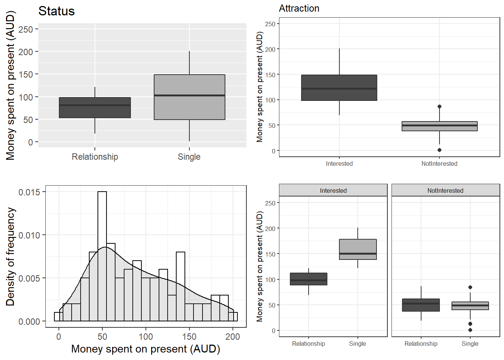
The upper left figure consists of a boxplot which shows how much money was spent based on the relationship status of the moan. The figure suggests that men spend more on women who are not in a relationship. The next figure shows the relationship between the money spend on presents and whether or not the men were interested in the women.
The boxplot in the upper right panel suggests that men spend substantially more on women if the men are interested in them. The next figure depicts the distribution of the amounts of money spend on women. In addition, the figure indicates the existence of two outliers (dots in the boxplot)
The histogram in the lower left panel shows that, although the mean amount of money spent on presents is 88.38 dollars, the distribution peaks around 50 dollars indicating that on average, men spend about 50 dollars on presents. Finally, we will plot the amount of money spend on presents against relationship status by attraction in order to check whether the money spent on presents is affected by an interaction between attraction and relationship status.
The boxplot in the lower right panel confirms the existence of an interaction (a non-additive term) as men only spend more money on single women if the men are interested in the women. If men are not interested in the women, then the relationship has no effect as they spend an equal amount of money on the women regardless of whether they are in a relationship or not.
We will now start to implement the regression model. In a first step, we create two saturated base-line models that contain all possible predictors (main effects and interactions). The two models are identical but one is generated with the “lm” and the other with the “glm” function as these functions offer different model parameters in their output.
m1.mlr = lm( # generate lm regression object
money ~ 1 + attraction*status, # def. rgression formula (1 = intercept)
data = mlrdata) # def. data
m1.glm = glm( # generate glm regression object
money ~ 1 + attraction*status, # def. rgression formula (1 = intercept)
family = gaussian, # def. linkage function
data = mlrdata) # def. dataAfter generating the saturated base-line models we can now start with the model fitting. Model fitting refers to a process that aims at find the model that explains a maximum of variance with a minimum of predictors (cf. A. Field, Miles, and Field 2012, 318). Model fitting is therefore based on the principle of parsimony which is related to Occam’s razor according to which explanations that require fewer assumptions are more likely to be true.
3.2 Automatic Model Fitting and Why You Should Not Use It
In this section, we will use a step-wise step-down procedure that uses decreases in AIC (Akaike information criterion) as the criterion to minimize the model in a step-wise manner. This procedure aims at finding the model with the lowest AIC values by evaluating - step-by-step - whether the removal of a predictor (term) leads to a lower AIC value.
We use this method here just so that you know it exists and how to implement it but you should rather avoid using automated model fitting. The reason for avoiding automated model fitting is that the algorithsm only checks if the AIC has decreased but not if the model is stable or reliable. Thus, automated model fitting has the problem that you can never be sure that the way that lead you to the final model is reliable and that all models were indeed stable. Imagine you want to climb down from a roof top and you have a ladder. The problem is that you do not know if and how many steps are broken. This is similar to using automated model fitting. In other sections, we will explore better methods to fit models (manual step-wise step-up and step-down procedures, for example).
The AIC is calculated using the equation below. The lower the AIC value, the better the balance between explained variance and the number of predictors. AIC values can and should only be compared for models that are fit on the same dataset with the same (number of) cases (\(LL\) stands for LogLikelihood and \(k\) represents the number of predictors in the model).
\[\begin{equation} -2LL + 2k \label{eq:aic} \end{equation}\]Interactions are evaluated first and only if all interactions have been removed would the procedure start removing main effects. Other model fitting procedures (forced entry, step-wise step up, hierarchical) are discussed during the implementation of other regression models. We cannot discuss all procedures here as model fitting is rather complex and a discussion of even the most common procedures would to lengthy and time consuming at this point. It is important to note though that there is not perfect model fitting procedure and automated approaches should be handled with care as they are likely to ignore violations of model parameters that can be detected during manual - but time consuming - model fitting procedures. As a general rule of thumb, it is advisable to fit models as carefully and deliberately as possible. We will now begin to fit the model.
# automated AIC based model fitting
step(m1.mlr, direction = "both")## Start: AIC=592.52
## money ~ 1 + attraction * status
##
## Df Sum of Sq RSS AIC
## <none> 34558 592.52
## - attraction:status 1 24947 59505 644.86##
## Call:
## lm(formula = money ~ 1 + attraction * status, data = mlrdata)
##
## Coefficients:
## (Intercept)
## 99.15
## attractionNotInterested
## -47.66
## statusSingle
## 57.69
## attractionNotInterested:statusSingle
## -63.18The automated model fitting procedure informs us that removing predictors ahs not caused a decrease in the AIC. The saturated model is thus also the final minimal adequate model. We will now inspect the final minimal model and go over the model report.
m2.mlr = lm( # generate lm regression object
money ~ (status + attraction)^2, # def. regression formula
data = mlrdata) # def. data
m2.glm = glm( # generate glm regression object
money ~ (status + attraction)^2, # def. regression formula
family = gaussian, # def. linkage function
data = mlrdata) # def. data
# inspect final minimal model
summary(m2.mlr)##
## Call:
## lm(formula = money ~ (status + attraction)^2, data = mlrdata)
##
## Residuals:
## Min 1Q Median 3Q Max
## -45.08 -14.26 0.46 11.93 44.14
##
## Coefficients:
## Estimate Std. Error t value Pr(>|t|)
## (Intercept) 99.155 3.795 26.131 < 2e-16
## statusSingle 57.693 5.366 10.751 < 2e-16
## attractionNotInterested -47.663 5.366 -8.882 3.75e-14
## statusSingle:attractionNotInterested -63.179 7.589 -8.325 5.81e-13
##
## (Intercept) ***
## statusSingle ***
## attractionNotInterested ***
## statusSingle:attractionNotInterested ***
## ---
## Signif. codes: 0 '***' 0.001 '**' 0.01 '*' 0.05 '.' 0.1 ' ' 1
##
## Residual standard error: 18.97 on 96 degrees of freedom
## Multiple R-squared: 0.852, Adjusted R-squared: 0.8474
## F-statistic: 184.3 on 3 and 96 DF, p-value: < 2.2e-16The first element of the report is called Call and it reports the regression formula of the model. Then, the report provides the residual distribution (the range, median and quartiles of the residuals) which allows drawing inferences about the distribution of differences between observed and expected values. If the residuals are distributed unevenly, then this is a strong indicator that the model is unstable and unreliable because mathematical assumptions on which the model is based are violated.
Next, the model summary reports the most important part: a table with model statistics of the fixed-effects structure of the model. The table contains the estimates (coefficients of the predictors), standard errors, t-values, and the p-values which show whether a predictor significantly correlates with the dependent variable that the model investigates.
All main effects (status and attraction) as well as the interaction between status and attraction is reported as being significantly correlated with the dependent variable (money). An interaction occurs if a correlation between the dependent variable and a predictor is affect by another predictor.
The top most term is called intercept and has a value of 99.15 which represents the base estimate to which all other estimates refer. To exemplify what this means, let us consider what the model would predict a man would spend on a present for a women who is single but the man is not attracted to her: The amount he would spend (based on the model would be 99.15 dollars (the intercept) plus 57.69 dollars (because she is single) minus 47.66 dollars (because he is not interested in her) minus 63.18 dollars because of the interaction between status and attraction.
#intercept Single NotInterested Single:NotInterested
99.15 + 57.69 + 0 + 0 # 156.8 single + interested## [1] 156.8499.15 + 57.69 - 47.66 - 63.18 # 46.00 single + not interested## [1] 4699.15 - 0 + 0 - 0 # 99.15 relationship + interested## [1] 99.1599.15 - 0 - 47.66 - 0 # 51.49 relationship + not interested## [1] 51.49Interestingly, the model predicts that a man would invest even less money in a woman that he is not interested in if she were single compared to being in a relationship! We can derive the same results easier using the “predict” function.
# make prediction based on the model for original data
prediction <- predict(m2.mlr, newdata = mlrdata)
# inspect predictions
table(round(prediction,2))##
## 46.01 51.49 99.15 156.85
## 25 25 25 25Below the table of coefficient, the summary reports model statistics that provide information about how well the model performs. The difference between the values and the values in the coefficients table is that the model statistics refer to the model as a whole rather than focusing on individual predictors.
The multiple R2-value is a measure of how much variance the model explains. A multiple R2-value of 0 would inform us that the model does not explain any variance while a value of .852 mean that the model explains 85.2 percent of the variance. A value of 1 would inform us that the model explains 100 percent of the variance and that the predictions of the model match the observed values perfectly. Multiplying the multiple R2-value thus provides the percentage of explained variance. Models that have a multiple R2-value equal or higher than .05 are deemed substantially significant (cf Szmrecsanyi 2006, 55). It has been claimed that models should explain a minimum of 5 percent of variance but this is problematic as itis not uncommon for models to have very low explanatory power while still performing significantly and systematically better than chance. In addition, the total amount of variance is negligible in cases where one is interested in very weak but significant effects. It is much more important for model to perform significantly better than minimal base-line models because if this is not the case, then the model does not have any predictive and therefore no explanatory power.
The adjusted R2-value considers the amount of explained variance in light of the number of predictors in the model (it is thus somewhat similar to the AIC and BIC) and informs about how well the model would perform if it were applied to the population that the sample is drawn from. Ideally, the difference between multiple and adjusted R2-value should be very small as this means that the model is not overfitted. If, however, the difference between multiple and adjusted R2-value is substantial, then this would strongly suggest that the model is instable and overfitted to the data while being inadequate for drawing inferences about the population. Differences between multiple and adjusted R2-values indicate that the data contains outliers that cause the distribution of the data on which the model is based to differ from the distributions that the model mathematically requires to provide reliable estimates. The difference between multiple and adjusted R2-value in our model is very small (85.2-84.7=.05) and should not cause concern.
Before continuing, we will calculate the confidence intervals of the coefficients.
# extract confidence intervals of the coefficients
confint(m2.mlr)## 2.5 % 97.5 %
## (Intercept) 91.62258 106.68702
## statusSingle 47.04063 68.34497
## attractionNotInterested -58.31497 -37.01063
## statusSingle:attractionNotInterested -78.24324 -48.11436# create and compare baseline- and minimal adequate model
m0.mlr <- lm(money ~1, data = mlrdata)
anova(m0.mlr, m2.mlr)## Analysis of Variance Table
##
## Model 1: money ~ 1
## Model 2: money ~ (status + attraction)^2
## Res.Df RSS Df Sum of Sq F Pr(>F)
## 1 99 233562
## 2 96 34558 3 199005 184.28 < 2.2e-16 ***
## ---
## Signif. codes: 0 '***' 0.001 '**' 0.01 '*' 0.05 '.' 0.1 ' ' 1Now, we compare the final minimal adequate model to the base-line model to test whether then final model significantly outperforms the baseline model.
# compare baseline- and minimal adequate model
Anova(m0.mlr, m2.mlr, type = "III")## Anova Table (Type III tests)
##
## Response: money
## Sum Sq Df F value Pr(>F)
## (Intercept) 781016 1 2169.6 < 2.2e-16 ***
## Residuals 34558 96
## ---
## Signif. codes: 0 '***' 0.001 '**' 0.01 '*' 0.05 '.' 0.1 ' ' 1The comparison between the two model confirms that the minimal adequate model performs significantly better (makes significantly more accurate estimates of the outcome variable) compared with the baseline model.
3.3 Outlier Detection
After implementing the multiple regression, we now need to look for outliers and perform the model diagnostics by testing whether removing data points disproportionately decreases model fit. To begin with, we generate diagnostic plots.
# start plotting
par(mfrow = c(1, 4)) # display plots in 3 rows/2 columns
plot(m2.mlr) # plot fitted values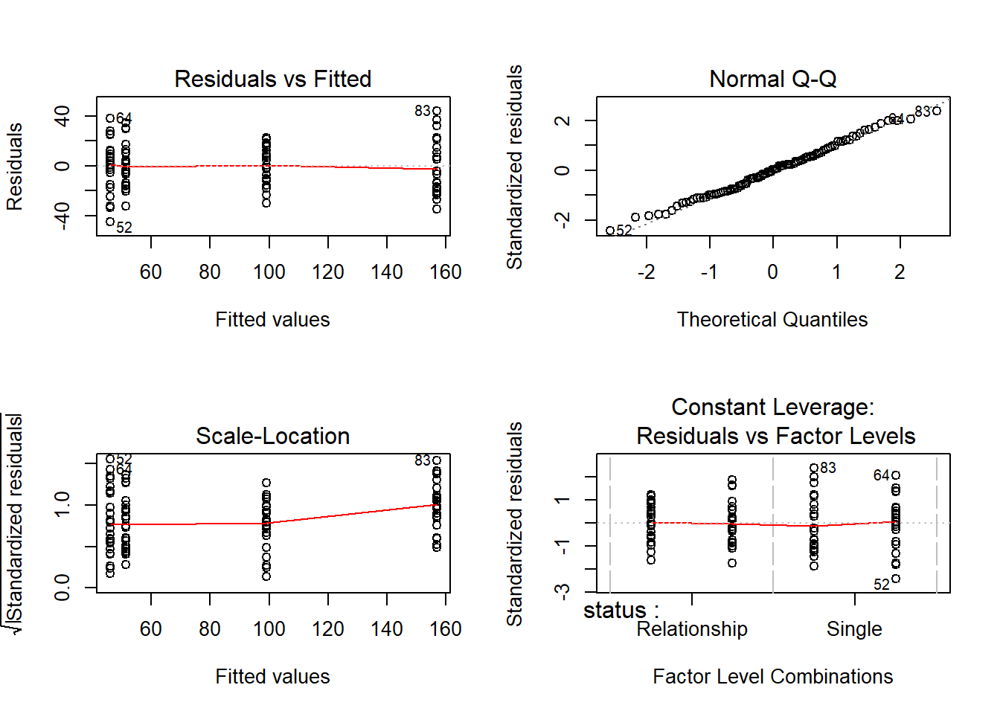
par(mfrow = c(1, 1)) # restore original settings# determine a cutoff for data points that have D-values higher than 4/(n-k-1)
cutoff <- 4/((nrow(mlrdata)-length(m2.mlr$coefficients)-2))
# start plotting
par(mfrow = c(1, 2)) # display plots in 3 rows/2 columns
qqPlot(m2.mlr, main="QQ Plot") # create qq-plot## [1] 52 83plot(m2.mlr, which=4, cook.levels = cutoff) # plot cook*s distance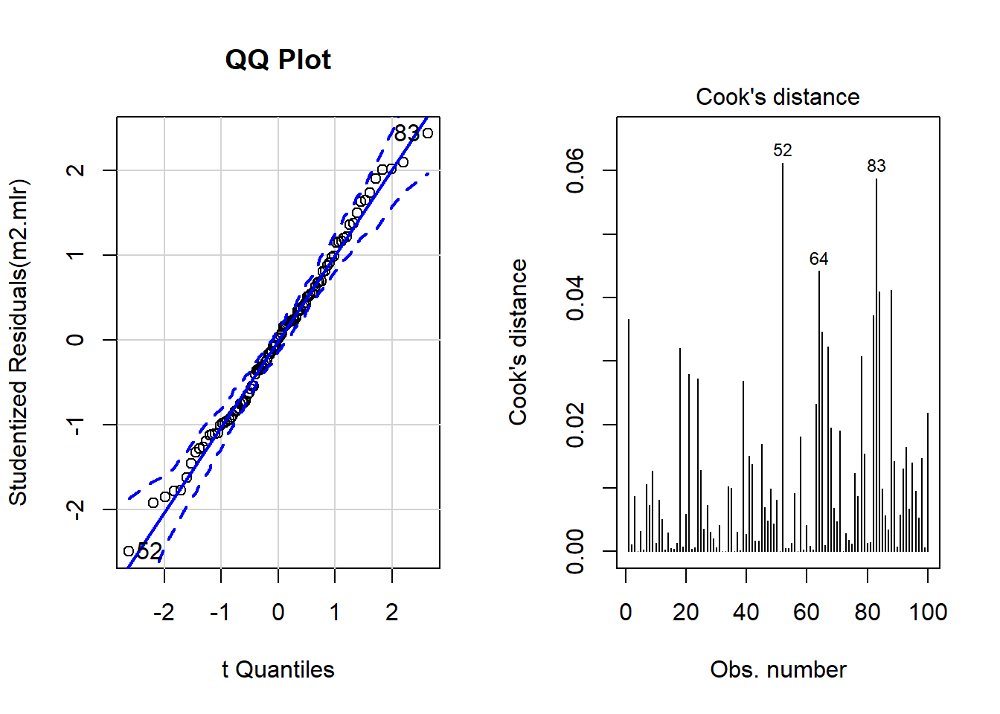
par(mfrow = c(1, 1)) # restore original settingsThe graphs indicate that data points 52, 64, and 83 may be problematic. We will therefore statistically evaluate whether these data points need to be removed. In order to find out which data points require removal, we extract the influence measure statistics and add them to out data set.
# extract influence statistics
infl <- influence.measures(m2.mlr)
# add infl. statistics to data
mlrdata <- data.frame(mlrdata, infl[[1]], infl[[2]])
# annotate too influential data points
remove <- apply(infl$is.inf, 1, function(x) {
ifelse(x == TRUE, return("remove"), return("keep")) } )
# add annotation to data
mlrdata <- data.frame(mlrdata, remove)
# number of rows before removing outliers
nrow(mlrdata)## [1] 100# remove outliers
mlrdata <- mlrdata[mlrdata$remove == "keep", ]
# number of rows after removing outliers
nrow(mlrdata)## [1] 98The difference in row in the data set before and after removing data points indicate that two data points which represented outliers have been removed.
3.4 Rerun Regression
As we have a different data set now, we need to rerun the regression analysis. As the steps are identical to the regression analysis performed above, the steps will not be described in greater detail.
# recreate regression models on new data
m0.mlr = lm(money ~ 1, data = mlrdata)
m0.glm = glm(money ~ 1, family = gaussian, data = mlrdata)
m1.mlr = lm(money ~ (status + attraction)^2, data = mlrdata)
m1.glm = glm(money ~ status * attraction, family = gaussian,
data = mlrdata)
# automated AIC based model fitting
step(m1.mlr, direction = "both")## Start: AIC=570.29
## money ~ (status + attraction)^2
##
## Df Sum of Sq RSS AIC
## <none> 30411 570.29
## - status:attraction 1 21647 52058 620.96##
## Call:
## lm(formula = money ~ (status + attraction)^2, data = mlrdata)
##
## Coefficients:
## (Intercept)
## 99.15
## statusSingle
## 55.85
## attractionNotInterested
## -47.66
## statusSingle:attractionNotInterested
## -59.46# create new final models
m2.mlr = lm(money ~ (status + attraction)^2, data = mlrdata)
m2.glm = glm(money ~ status * attraction, family = gaussian,
data = mlrdata)
# inspect final minimal model
summary(m2.mlr)##
## Call:
## lm(formula = money ~ (status + attraction)^2, data = mlrdata)
##
## Residuals:
## Min 1Q Median 3Q Max
## -35.764 -13.505 -0.989 10.599 38.772
##
## Coefficients:
## Estimate Std. Error t value Pr(>|t|)
## (Intercept) 99.155 3.597 27.563 < 2e-16
## statusSingle 55.854 5.140 10.866 < 2e-16
## attractionNotInterested -47.663 5.087 -9.369 4.04e-15
## statusSingle:attractionNotInterested -59.461 7.269 -8.180 1.34e-12
##
## (Intercept) ***
## statusSingle ***
## attractionNotInterested ***
## statusSingle:attractionNotInterested ***
## ---
## Signif. codes: 0 '***' 0.001 '**' 0.01 '*' 0.05 '.' 0.1 ' ' 1
##
## Residual standard error: 17.99 on 94 degrees of freedom
## Multiple R-squared: 0.8574, Adjusted R-squared: 0.8528
## F-statistic: 188.4 on 3 and 94 DF, p-value: < 2.2e-16# extract confidence intervals of the coefficients
confint(m2.mlr)## 2.5 % 97.5 %
## (Intercept) 92.01216 106.29744
## statusSingle 45.64764 66.05943
## attractionNotInterested -57.76402 -37.56158
## statusSingle:attractionNotInterested -73.89468 -45.02805# compare baseline with final model
anova(m0.mlr, m2.mlr)## Analysis of Variance Table
##
## Model 1: money ~ 1
## Model 2: money ~ (status + attraction)^2
## Res.Df RSS Df Sum of Sq F Pr(>F)
## 1 97 213227
## 2 94 30411 3 182816 188.36 < 2.2e-16 ***
## ---
## Signif. codes: 0 '***' 0.001 '**' 0.01 '*' 0.05 '.' 0.1 ' ' 1# compare baseline with final model
Anova(m0.mlr, m2.mlr, type = "III")## Anova Table (Type III tests)
##
## Response: money
## Sum Sq Df F value Pr(>F)
## (Intercept) 760953 1 2352.1 < 2.2e-16 ***
## Residuals 30411 94
## ---
## Signif. codes: 0 '***' 0.001 '**' 0.01 '*' 0.05 '.' 0.1 ' ' 13.5 Additional Model Diagnostics
After rerunning the regression analysis on the updated data set, we again create diagnostic plots in order to check whether there are potentially problematic data points.
# start plotting
par(mfrow = c(2, 2)) # display plots in 2 rows/2 columns
plot(m2.mlr) # plot fitted values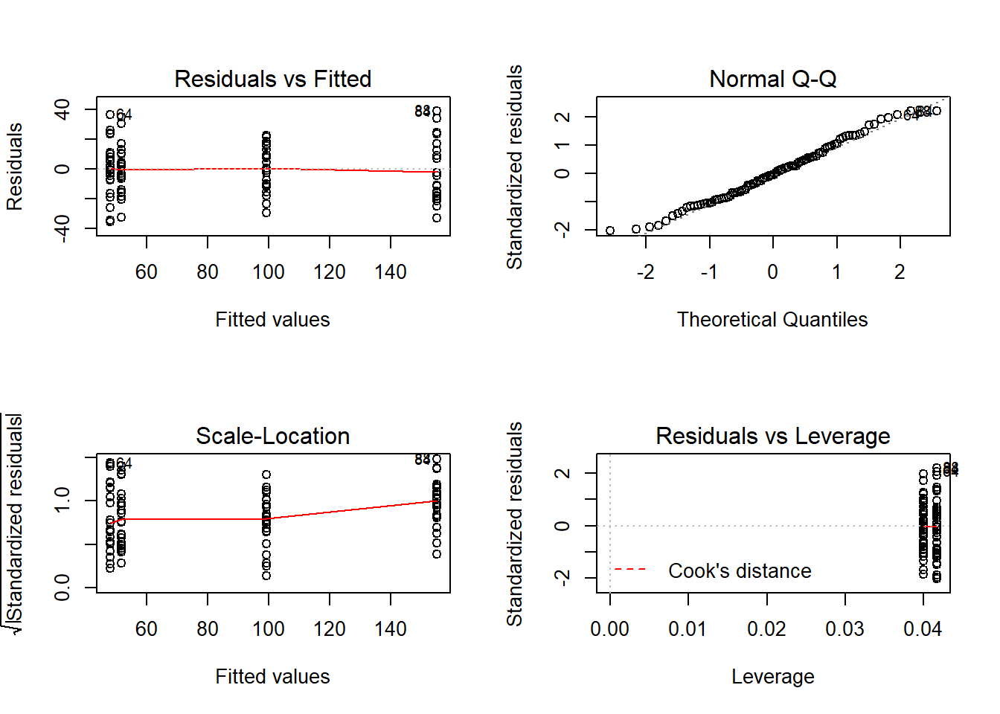
par(mfrow = c(1, 1)) # restore original settings# determine a cutoff for data points that have
# D-values higher than 4/(n-k-1)
cutoff <- 4/((nrow(mlrdata)-length(m2.mlr$coefficients)-2))
# start plotting
par(mfrow = c(1, 2)) # display plots in 1 row/2 columns
qqPlot(m2.mlr, main="QQ Plot") # create qq-plot## 84 88
## 82 86plot(m2.mlr, which=4, cook.levels = cutoff) # plot cook*s distance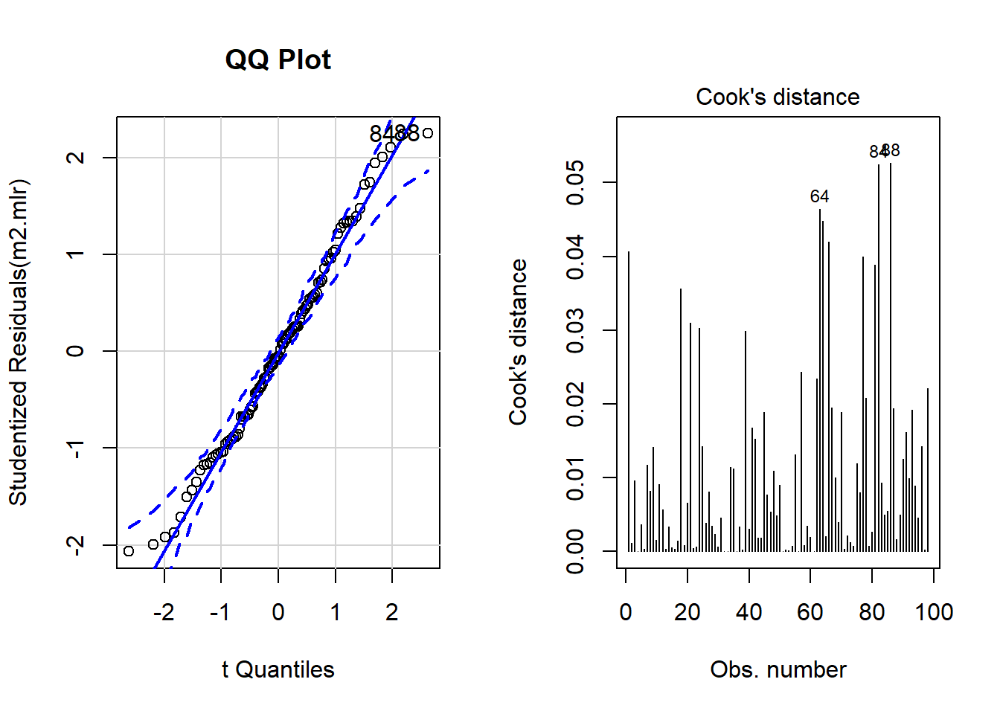
par(mfrow = c(1, 1)) # restore original settingsAlthough the diagnostic plots indicate that additional points may be problematic, but these data points deviate substantially less from the trend than was the case with the data points that have already been removed. To make sure that retaining the data points that are deemed potentially problematic by the diagnostic plots, is acceptable, we extract diagnostic statistics and add them to the data.
# add model diagnostics to the data
mlrdata$residuals <- resid(m2.mlr)
mlrdata$standardized.residuals <- rstandard(m2.mlr)
mlrdata$studentized.residuals <- rstudent(m2.mlr)
mlrdata$cooks.distance <- cooks.distance(m2.mlr)
mlrdata$dffit <- dffits(m2.mlr)
mlrdata$leverage <- hatvalues(m2.mlr)
mlrdata$covariance.ratios <- covratio(m2.mlr)
mlrdata$fitted <- m2.mlr$fitted.valuesWe can now use these diagnostic statistics to create more precise diagnostic plots.
# plot 5
p5 <- ggplot(mlrdata,
aes(studentized.residuals)) +
theme(legend.position = "none") +
theme_set(theme_bw(base_size = 8))+
geom_histogram(aes(y=..density..),
binwidth = 1,
colour="black",
fill="white") +
labs(x = "Studentized Residual", y = "Density") +
stat_function(fun = dnorm,
args = list(mean = mean(mlrdata$studentized.residuals, na.rm = TRUE),
sd = sd(mlrdata$studentized.residuals, na.rm = TRUE)),
colour = "red", size = 1)
# plot 6
p6 <- ggplot(mlrdata, aes(fitted, studentized.residuals)) +
geom_point() +
geom_smooth(method = "lm", colour = "Red")+
theme_set(theme_bw(base_size = 8))+
labs(x = "Fitted Values",
y = "Studentized Residual")
# plot 7
p7 <- qplot(sample = mlrdata$studentized.residuals, stat="qq") +
theme_set(theme_bw(base_size = 8))+
labs(x = "Theoretical Values",
y = "Observed Values")
multiplot(p5, p6, p7, cols = 3)
The new diagnostic plots do not indicate outliers that require removal. With respect to such data points the following parameters should be considered:
Data points with standardised residuals > 3.29 should be removed (A. Field, Miles, and Field 2012, 269)
If more than 1 percent of data points have standardized residuals exceeding values > 2.58, then the error rate of the model is inacceptable (A. Field, Miles, and Field 2012, 269).
If more than 5 percent of data points have standardized residuals exceeding values > 1.96, then the error rate of the model is inacceptable (A. Field, Miles, and Field 2012, 269)
In addition, data points with Cook’s D-values > 1 should be removed (A. Field, Miles, and Field 2012, 269)
Also, data points with leverage values \(3(k + 1)/n\) (k = Number of predictors, N = Number of cases in model) should be removed (A. Field, Miles, and Field 2012, 270)
There should not be (any) autocorrelation among predictors. This means that independent variables cannot be correlated with itself (for instance, because data points come from the same subject). If there is autocorrelation among predictors, then a Repeated Measures Design or a (hierarchical) mixed-effects model should be implemented instead.
Predictors cannot substantially correlate with each other (multicollinearity). If a model contains predictors that have variance inflation factors (VIF) > 10 the model is completely unreliable (Myers 1990) and predictors causing such VIFs should be removed. Indeed, even VIFs of 2.5 can be problematic (Szmrecsanyi 2006, 215) and (Zuur, Ieno, and Elphick 2010) proposes that variables with VIFs exceeding 3 should be removed!
Data points with 1/VIF values \(<\) .1 must be removed (data points with values above .2 are considered problematic) (Menard 1995).
The mean value of VIFs should be \(<\) 1 (Bowerman and O’Connell 1990).
# 1: optimal = 0
# (aufgelistete datenpunkte sollten entfernt werden)
which(mlrdata$standardized.residuals > 3.29)## integer(0)# 2: optimal = 1
# (listed data points should be removed)
stdres_258 <- as.vector(sapply(mlrdata$standardized.residuals, function(x) {
ifelse(sqrt((x^2)) > 2.58, 1, 0) } ))
(sum(stdres_258) / length(stdres_258)) * 100## [1] 0# 3: optimal = 5
# (listed data points should be removed)
stdres_196 <- as.vector(sapply(mlrdata$standardized.residuals, function(x) {
ifelse(sqrt((x^2)) > 1.96, 1, 0) } ))
(sum(stdres_196) / length(stdres_196)) * 100## [1] 6.122449# 4: optimal = 0
# (listed data points should be removed)
which(mlrdata$cooks.distance > 1)## integer(0)# 5: optimal = 0
# (data points should be removed if cooks distance is close to 1)
which(mlrdata$leverage >= (3*mean(mlrdata$leverage)))## integer(0)# 6: checking autocorrelation:
# Durbin-Watson test (optimal: grosser p-wert)
dwt(m2.mlr)## lag Autocorrelation D-W Statistic p-value
## 1 -0.01433247 1.968042 0.646
## Alternative hypothesis: rho != 0# 7: test multicolliniarity 1
vif(m2.mlr)## status attraction status:attraction
## 2.00 1.96 2.96# 8: test multicolliniarity 2
1/vif(m2.mlr)## status attraction status:attraction
## 0.5000000 0.5102041 0.3378378# 9: mean vif should not exceed 1
mean(vif(m2.mlr))## [1] 2.306667Except for the mean VIF value (2.307) which should not exceed 1, all diagnostics are acceptable. We will now test whether the sample size is sufficient for our model. With respect to the minimal sample size and based on (Green 1991), (A. Field, Miles, and Field 2012, 273–74) offer the following rules of thumb (k = number of predictors; categorical predictors with more than two levels should be recoded as dummy variables):
3.6 Evaluation of Sample Size
After performing the diagnostics, we will now test whether the sample size is adequate and what the values of “R” would be based on a random distribution in order to be able to estimate how likely a \(\beta\)-error is given the present sample size (cf. A. Field, Miles, and Field 2012, 274). Beta errors (or \(\beta\)-errors) refer to the erroneous assumption that a predictor is not significant (based on the analysis and given the sample) although it does have an effect in the population. In other words, \(\beta\)-error means to overlook a significant effect because of weaknesses of the analysis. The test statistics ranges between 0 and 1 where lower values are better. If the values approximate 1, then there is serious concern as the model is not reliable given the sample size. In such cases, unfortunately, the best option is to increase the sample size.
# check if sample size is sufficient
smplesz(m2.mlr)## [1] "Sample too small: please increase your sample by 9 data points"# check beta-error likelihood
expR(m2.mlr)## [1] "Based on the sample size expect a false positive correlation of 0.0309 between the predictors and the predicted"The function “smplesz” reports that the sample size is insufficient by 9 data points according to (Green 1991). The likelihood of \(\beta\)-errors, however, is very small (0.0309). As a last step, we summarize the results of the regression analysis.
# tabulate regression results
mlrsummary <- mlr.summary(m2.mlr, m2.glm, ia = T)
# remove columns with confidence intervals
mlrsummary[,-c(4:5)]## Estimate VIF CI(2.5%) t value
## (Intercept) 99.15 92.1 27.56
## statusSingle 55.85 2 45.78 10.87
## attractionNotInterested -47.66 1.96 -57.63 -9.37
## statusSingle:attractionNotInterested -59.46 2.96 -73.71 -8.18
## Model statistics
## Number of cases in model
## Residual Standard Error on 94 DF
## Multiple R2
## Adjusted R2
## AIC
## BIC
## F-statistic DF: 3 and 94
## Pr(>|t|) Significance
## (Intercept) 0 p < .001***
## statusSingle 0 p < .001***
## attractionNotInterested 0 p < .001***
## statusSingle:attractionNotInterested 0 p < .001***
## Model statistics Value
## Number of cases in model 98
## Residual Standard Error on 94 DF 17.99
## Multiple R2 0.857
## Adjusted R2 0.853
## AIC 850.4
## BIC 863.32
## F-statistic p-value: 0 p < .001***Although (A. Field, Miles, and Field 2012) suggest that the main effects of the predictors involved in the interaction should not be interpreted, they are interpreted here to illustrate how the results of a multiple linear regression can be reported. Accordingly, the results of the regression analysis performed above can be summarized as follows:
A multiple linear regression was fitted to the data in a step-wise step-down, AIC-based (Akaike’s Information Criterion) procedure to the data and arrived at a final minimal model. During the model diagnostics, two outliers were detected and removed. Further diagnostics did not find other issues after the removal.
The final minimal adequate regression model is based on 98 data points and performs highly significantly better than a minimal baseline model (Multiple R2: .857, Adjusted R2: .853, F-statistic (3, 94): 154.4, AIC: 850.4, BIC: 863.32, p<.001\(***\)). The final minimal adequate regression model reports attraction and status as significant main effects. The relationship status of women correlates highly significantly and positively with the amount of money spend on the women’s presents (SE: 5.14, t-value: 10.87, p<.001\(***\)). This shows that men spend 156.8 dollars on presents are single while they spend 99,15 dollars if the women are in a relationship. Whether men are attracted to women also correlates highly significantly and positively with the money they spend on women (SE: 5.09, t-values: -9.37, p<.001\(***\)). If men are not interested in women, they spend 47.66 dollar less on a present for women compared with women the men are interested in.
Furthermore, the final minimal adequate regression model reports a highly significant interaction between relationship status and attraction (SE: 7.27, t-value: -8.18, p<.001\(***\)): If women are single but man are not interested in them, men spend 59.46 dollars less on their presents compared to all other constellations.
3.7 Exercises
- Download the data “exdatamlr” from “https://slcladal.github.io/data/exdatamlr.txt” and apply what you have learned by implementing a multiple linear regression model so that you can answer how movement (move) and food intake (food) affect weight (given the data at hand).
4 Multiple Binomial Logistic Regression
Logistic regression is a multivariate analysis technique that builds on and is very similar in terms of its implementation to linear regression but logistic regressions take dependent variables that represent nominal rather than numeric scaling. The difference requires that the linear regression must be modified in certain ways to avoid producing non-sensical outcomes. The most fundamental difference between logistic and linear regressions is that logistic regression work on the probabilities of an outcome (the likelihood), rather than the outcome itself. In addition, the likelihoods on which the logistic regression works must be logged (logarithmized) in order to avoid produce predictions that produce values greater than 1 (instance occurs) and 0 (instance does not occur).
To understand what this mean, we will use a very simple example. In this example, we want to see whether the height of men affect their likelihood of being in a relationship. The data we use represents a data set consisting of two variables: height and relationship.
| bodyheight | relationship |
|---|---|
| 162.6922 | 0 |
| 164.8087 | 0 |
| 167.5984 | 0 |
| 170.6743 | 0 |
| 176.2979 | 0 |
| 176.8498 | 1 |
| 177.3199 | 0 |
| 177.3734 | 1 |
| 179.1526 | 0 |
| 179.4977 | 0 |
| 181.7498 | 1 |
| 182.1185 | 1 |
| 183.9847 | 0 |
| 185.2744 | 1 |
| 186.3303 | 1 |
| 187.5768 | 1 |
| 193.2436 | 0 |
| 193.8981 | 1 |
| 194.0000 | 1 |
| 200.9167 | 1 |
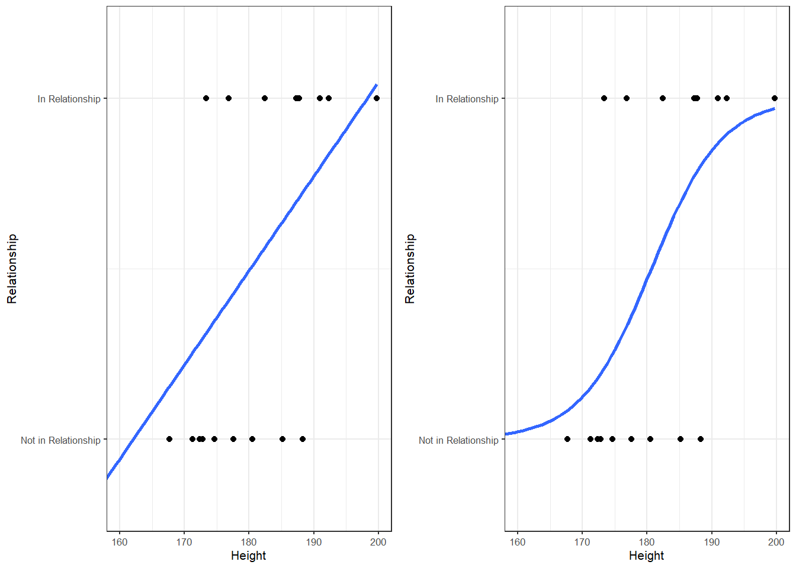
The left panel of the Figure above shows that a linear model would predict values for the relationship status, which represents a factor (0 = Not in Relationship and 1 = In Relationship), that are non-sensical because 1.1 does not make sense if the only options are 0 OR 1. The logistic function shown in the right panel of the Figure above solves this problem by working on the logged probabilities of an outcome rather than on the actual outcome.
4.1 Example 1: EH in Kiwi English
To exemplify hot to implement a logistic regression in “R”, we will analyse the use of the discourse particle eh in New Zealand English and test which factors correlate with its occurrence. The data set represents speech units in a corpus that were coded for the speaker who uttered a given speech unit, the gender, ethnicity, and age of that speaker and whether or not the speech unit contained an eh. To begin with, we clean the current work space, set option, install and activate relevant packages, load customized functions, and load the example data set.
# clean workspace
rm(list=ls(all=T))
# set options
options("scipen" = 100, "digits" = 4)
# load libraries
library(effects)
library(ggplot2)
library(mlogit)
library(plyr)
library(rms)
library(sjPlot)
library(visreg)
# load functions
source("rscripts/multiplot_ggplot2.R")
source("rscripts/blr.summary.R")
# load data
blrdata <- read.table("data/blrdata.txt",
comment.char = "", # data does not contain comments
quote = "", # data does not contain quotes
sep = "\t", # data is tab separetd
header = T) # variables have headers
# inspect data
str(blrdata)## 'data.frame': 25821 obs. of 5 variables:
## $ ID : Factor w/ 203 levels "<S1A-001#F>",..: 2 2 2 2 2 2 2 2 2 2 ...
## $ Gender : Factor w/ 2 levels "Men","Women": 1 1 1 1 1 1 1 1 1 1 ...
## $ Age : Factor w/ 2 levels "Old","Young": 2 2 2 2 2 2 2 2 2 2 ...
## $ Ethnicity: Factor w/ 2 levels "Maori","Pakeha": 2 2 2 2 2 2 2 2 2 2 ...
## $ EH : int 0 1 0 0 1 1 0 0 0 1 ...The summary of the data show that the data set contains 25,821 observations of five variables. The variable “ID” contains strings that represent a combination file and speaker of a speech unit. The second variable represents the gender, the third the age, and the fourth the ethnicity of speakers. The fifth variable represents whether or not a speech unit contained the discourse particle EH. The first six lines of the data set are shown in the Table below.
| ID | Gender | Age | Ethnicity | EH |
|---|---|---|---|---|
| Men | Young | Pakeha | 0 | |
| Men | Young | Pakeha | 1 | |
| Men | Young | Pakeha | 0 | |
| Men | Young | Pakeha | 0 | |
| Men | Young | Pakeha | 1 | |
| Men | Young | Pakeha | 1 |
Next, we factorize the variables in our data set. In other words, we specify that the strings represent variable levels and define new reference levels because as a default “R” will use the variable level which first occurs in alphabet ordering as the reference level for each variable, we redefine the variable levels for Age and Ethnicity.
vrs <- c("Age", "Gender", "Ethnicity", "ID") # define variables to be factorized
fctr <- which(colnames(blrdata) %in% vrs) # define vector with variables
blrdata[,fctr] <- lapply(blrdata[,fctr], factor) # factorize variables
blrdata$Age <- relevel(blrdata$Age, "Young") # relevel Age (Young = Reference)
blrdata$Ethnicity <- relevel( # relevel Ethnicity
blrdata$Ethnicity, "Pakeha") # define Pakeha as Reference level)After preparing the data, we will now plot the data to get an overview of potential relationships between variables.
ggplot(blrdata, aes(Age, EH, color = Gender)) +
facet_wrap(~Ethnicity) +
stat_summary(fun.y = mean, geom = "point") +
stat_summary(fun.data = mean_cl_boot, geom = "errorbar", width = 0.2) +
theme_set(theme_bw(base_size = 10)) +
theme(legend.position = "top") +
labs(x = "", y = "Observed Probabilty of eh") +
scale_color_manual(values = c("gray20", "gray70"))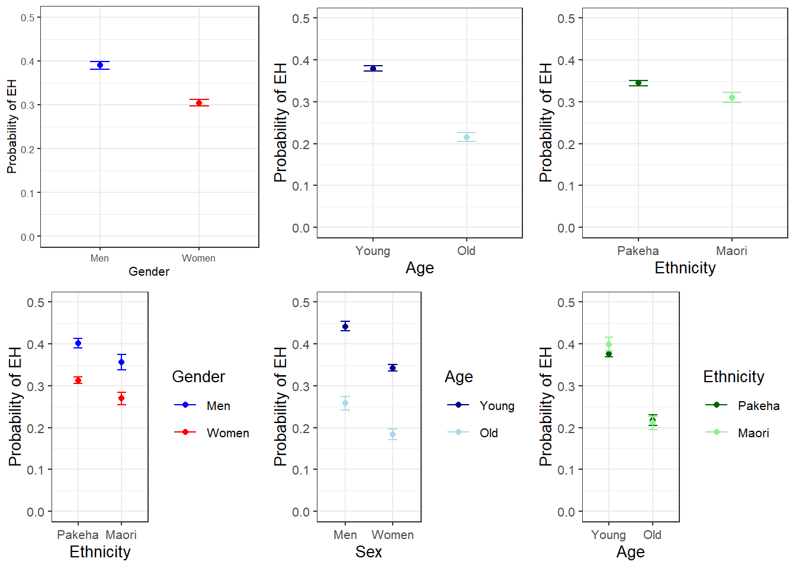
With respect to main effects, the Figure above indicates that men use eh more frequently than women, that young speakers sue it more frequently compared with old speakers, and that speakers that are descendants of European settlers (Pakeha) use eh more frequently compared with Maori (the native inhabitants of New Zealand).
The plots in the lower panels do not indicate significant interactions between use of EH and the Age, Gender, and Ethnicity of speakers. In a next step, we will start building the logistic regression model.
4.2 Model Building
As a first step, we need to define contrasts and add a distance matrix to the options. Contrasts define what and how variable levels should be compared and therefore influences how the results of the regression analysis are presented.
# set contrasts
options(contrasts =c("contr.treatment", "contr.poly"))
# create distance matrix
blrdata.dist <- datadist(blrdata)
# include distance matrix in options
options(datadist = "blrdata.dist")Next, we generate two minimal models that predict the use of eh solely based on the intercept.
# baseline glm model
m0.glm = glm(EH ~ 1, family = binomial, data = blrdata)
# baseline lrm model
m0.lrm = lrm(EH ~ 1, data = blrdata, x = T, y = T)A few words on “glm” vs “lrm”: Baayen (2008:196-197) states that “lrm” should be the function of choice in cases where each row contains exactly 1 success OR failure (1 or 0) while “glm” is preferable if there are two columns holding the number of successes and the number of failures respectively. I have tried it both ways and both functions work fine if each row contains exactly 1 success OR failure but only glm can handle the latter case.
4.3 Model fitting
We will now start with the model fitting procedure. In the present case, we will use a manual step-wise step-up procedure during which predictors are added to the model if they significantly improve the model fit. In addition, we will perform diagnostics as we fit the model ateach step of the model fitting process rather than after the fitting.
We will test two things in particular: whether the data has incomplete information or complete separation and if the model suffers from multicollinearity.
Incomplete information or complete separation means that the data does not contain all combinations of the predictor or the dependent variable. This is important because if the data does not contain cases of all combinations, the model will assume that it has found a perfect predictor. In such cases the model overestimates the effect of that that predictor and the results of that model are no longer reliable. For example, if “EH” was only used by young speakers in the data, the model would jump on that fact and say “Ha! If there is an old speaker, that means that that speaker will never ever and under no circumstances say”EH" - I can therefore ignore all other factors!"
Multicollinearity means that predictors correlate and have shared variance. This means that whichever predictor is included first will take all the variance that it can explain and the remaining part of the variable that is shared will not be attributed to the other predictor. This may lead to reporting that a factor is not significant because all of the variance it can explain is already accounted for. However, if the other predictor were included first, then the orginal predictor would be returned as insignificant. This means that- depending on the order in which predictors are added - the results of the regression can differ dramatically and the model is therefore not reliable. Multicollinearity is actually a very comon problem and theer are various ways to deal with it but it cannot be ignored (at least in regression analyses).
We will start by adding “Age” to the minimal adequate model.
# check incomplete information
ifelse(min(ftable(blrdata$Age, blrdata$EH)) == 0, "not possible", "possible")## [1] "possible"# add age to the model
m1.glm = glm(EH ~ Age, family = binomial, data = blrdata)
# check multicollinearity (vifs should have values of 3 or lower for main effects)
ifelse(max(vif(m1.glm)) <= 3, "vifs ok", "WARNING: high vifs!") # VIFs ok## [1] "vifs ok"# check if adding Age significantly improves model fit
anova(m1.glm, m0.glm, test = "Chi")## Analysis of Deviance Table
##
## Model 1: EH ~ Age
## Model 2: EH ~ 1
## Resid. Df Resid. Dev Df Deviance Pr(>Chi)
## 1 25819 32377
## 2 25820 33008 -1 -631 <0.0000000000000002 ***
## ---
## Signif. codes: 0 '***' 0.001 '**' 0.01 '*' 0.05 '.' 0.1 ' ' 1As the data does not contain incomplete information, the vif values are below 3, and adding “Age” has significantly imporved the mdel fit (the p-value of the anova is lower than .05). We therefore proceed with “Age” included.
We continue by adding “Gender”. We add a second ANOVA test to see if including Gender affects the significance of other predictors in the model. If this were the case - if adding Gender woudl cause Age to become insignificant - then we could change the ordering in which we include predictors into our model.
ifelse(min(ftable(blrdata$Gender, blrdata$EH)) == 0, "not possible", "possible")## [1] "possible"m2.glm <- update(m1.glm, . ~ . +Gender)
ifelse(max(vif(m2.glm)) <= 3, "vifs ok", "WARNING: high vifs!") # VIFs ok## [1] "vifs ok"anova(m2.glm, m1.glm, test = "Chi")## Analysis of Deviance Table
##
## Model 1: EH ~ Age + Gender
## Model 2: EH ~ Age
## Resid. Df Resid. Dev Df Deviance Pr(>Chi)
## 1 25818 32140
## 2 25819 32377 -1 -237 <0.0000000000000002 ***
## ---
## Signif. codes: 0 '***' 0.001 '**' 0.01 '*' 0.05 '.' 0.1 ' ' 1Anova(m2.glm, test = "LR")## Analysis of Deviance Table (Type II tests)
##
## Response: EH
## LR Chisq Df Pr(>Chisq)
## Age 669 1 <0.0000000000000002 ***
## Gender 237 1 <0.0000000000000002 ***
## ---
## Signif. codes: 0 '***' 0.001 '**' 0.01 '*' 0.05 '.' 0.1 ' ' 1Again, including “Gender” significantly improves model fit and the data does not contain incomplete information or complete separation. Also, including “Gender” does not affect the significance of “Age”. Now, we include “Ethnicity”.
ifelse(min(ftable(blrdata$Ethnicity, blrdata$EH)) == 0, "not possible", "possible")## [1] "possible"m3.glm <- update(m2.glm, . ~ . +Ethnicity)
ifelse(max(vif(m3.glm)) <= 3, "vifs ok", "WARNING: high vifs!") # VIFs ok## [1] "vifs ok"anova(m3.glm, m2.glm, test = "Chi")## Analysis of Deviance Table
##
## Model 1: EH ~ Age + Gender + Ethnicity
## Model 2: EH ~ Age + Gender
## Resid. Df Resid. Dev Df Deviance Pr(>Chi)
## 1 25817 32139
## 2 25818 32140 -1 -0.261 0.61Since adding “Ethnicity” does not significantly imporve the mdoel fit, we do not need to test if its inclusion affects the significance of other predictors. We continue without “Ethnicity” and include the interaction between “Age” and “Gender”.
ifelse(min(ftable(blrdata$Age, blrdata$Gender, blrdata$EH)) == 0, "not possible", "possible")## [1] "possible"m4.glm <- update(m2.glm, . ~ . +Age*Gender)
ifelse(max(vif(m4.glm)) <= 3, "vifs ok", "WARNING: high vifs!") # VIFs ok## [1] "vifs ok"anova(m4.glm, m2.glm, test = "Chi")## Analysis of Deviance Table
##
## Model 1: EH ~ Age + Gender + Age:Gender
## Model 2: EH ~ Age + Gender
## Resid. Df Resid. Dev Df Deviance Pr(>Chi)
## 1 25817 32139
## 2 25818 32140 -1 -0.124 0.72The interaction between Age and Gender is not significant which means that men and women do not behave differently with respect to their use of “EH” as they age. Also, the data does not contain incomplete information and the model does not suffer from multicollinerity - the predictors are not collinear. We can now include if there is a significant interaction between “Age” and “Ethnicity”.
ifelse(min(ftable(blrdata$Age, blrdata$Ethnicity, blrdata$EH)) == 0, "not possible", "possible")## [1] "possible"m5.glm <- update(m2.glm, . ~ . +Age*Ethnicity)
ifelse(max(vif(m5.glm)) <= 3, "vifs ok", "WARNING: high vifs!") # VIFs ok## [1] "vifs ok"anova(m5.glm, m2.glm, test = "Chi")## Analysis of Deviance Table
##
## Model 1: EH ~ Age + Gender + Ethnicity + Age:Ethnicity
## Model 2: EH ~ Age + Gender
## Resid. Df Resid. Dev Df Deviance Pr(>Chi)
## 1 25816 32136
## 2 25818 32140 -2 -3.07 0.22Again, no incomplete information or multicollinearity and no significant interaction. Now, we test if there exists a significant interaction between “Gender” and “Ethnicity”.
ifelse(min(ftable(blrdata$Gender, blrdata$Ethnicity, blrdata$EH)) == 0, "not possible", "possible")## [1] "possible"m6.glm <- update(m2.glm, . ~ . +Gender*Ethnicity)
ifelse(max(vif(m6.glm)) <= 3, "vifs ok", "WARNING: high vifs!") # VIFs ok## [1] "vifs ok"anova(m6.glm, m2.glm, test = "Chi")## Analysis of Deviance Table
##
## Model 1: EH ~ Age + Gender + Ethnicity + Gender:Ethnicity
## Model 2: EH ~ Age + Gender
## Resid. Df Resid. Dev Df Deviance Pr(>Chi)
## 1 25816 32139
## 2 25818 32140 -2 -0.272 0.87As the interaction between “Gender” and “Ethnicity” is not significant, we continue without it. In a final step, we include the three-way interaction between “Age”, “Gender”, and “Ethnicity”.
ifelse(min(ftable(blrdata$Age, blrdata$Gender, blrdata$Ethnicity, blrdata$EH)) == 0, "not possible", "possible")## [1] "possible"m7.glm <- update(m2.glm, . ~ . +Gender*Ethnicity)
ifelse(max(vif(m7.glm)) <= 3, "vifs ok", "WARNING: high vifs!") # VIFs ok## [1] "vifs ok"anova(m7.glm, m2.glm, test = "Chi")## Analysis of Deviance Table
##
## Model 1: EH ~ Age + Gender + Ethnicity + Gender:Ethnicity
## Model 2: EH ~ Age + Gender
## Resid. Df Resid. Dev Df Deviance Pr(>Chi)
## 1 25816 32139
## 2 25818 32140 -2 -0.272 0.87We have found our final minimal adequate model because the 3-way interaction is also insignificant. As we have now arrived at the final minimal adequate model (m2.glm), we generate a final minimal model using the “lrm” model.
m2.lrm <- lrm(EH ~ Age+Gender, data = blrdata, x = T, y = T, linear.predictors = T)
m2.lrm## Logistic Regression Model
##
## lrm(formula = EH ~ Age + Gender, data = blrdata, x = T, y = T,
## linear.predictors = T)
##
## Model Likelihood Discrimination Rank Discrim.
## Ratio Test Indexes Indexes
## Obs 25821 LR chi2 868.21 R2 0.046 C 0.602
## 0 17114 d.f. 2 g 0.432 Dxy 0.203
## 1 8707 Pr(> chi2) <0.0001 gr 1.541 gamma 0.302
## max |deriv| 3e-10 gp 0.091 tau-a 0.091
## Brier 0.216
##
## Coef S.E. Wald Z Pr(>|Z|)
## Intercept -0.2324 0.0223 -10.44 <0.0001
## Age=Old -0.8305 0.0335 -24.78 <0.0001
## Gender=Women -0.4201 0.0273 -15.42 <0.0001
## anova(m2.lrm)## Wald Statistics Response: EH
##
## Factor Chi-Square d.f. P
## Age 614.0 1 <.0001
## Gender 237.7 1 <.0001
## TOTAL 802.6 2 <.0001After fitting the model, we validate the model to avoid arriving at a final minimal model that is overfitted to the data at hand.
4.4 Model Validation
To validate a model, you can apply the “validate” function and apply it to a saturated model. The output of the “validate” function shows how often predictors are retained if the sample is re-selected with the same size but with placing back drawn data points. The execution of the function requires some patience as it is rather computationally expensive and it is, tehrefore, commented out below.
# model validation (remove # to activate: output too long for website)
m7.lrm <- lrm(EH ~ (Age+Gender+Ethnicity)^3, data = blrdata, x = T, y = T, linear.predictors = T)
#validate(m7.lrm, bw = T, B = 200)The “validate” function shows that retaining two predictors (Age and Gender) is the best option and thereby confirms our final minimal adequate model as the best minimal model. In addition, we check whether we need to include a penalty for data points because they have too strong of an impact of the model fit. To see whether a penalty is warranted, we apply the “pentrace” function to the final minimal adequate model.
pentrace(m2.lrm, seq(0, 0.8, by = 0.05)) # determine penalty##
## Best penalty:
##
## penalty df
## 0.8 1.999
##
## penalty df aic bic aic.c
## 0.00 2.000 864.2 847.9 864.2
## 0.05 2.000 864.2 847.9 864.2
## 0.10 2.000 864.2 847.9 864.2
## 0.15 2.000 864.2 847.9 864.2
## 0.20 2.000 864.2 847.9 864.2
## 0.25 2.000 864.2 847.9 864.2
## 0.30 2.000 864.2 847.9 864.2
## 0.35 2.000 864.2 847.9 864.2
## 0.40 2.000 864.2 847.9 864.2
## 0.45 2.000 864.2 847.9 864.2
## 0.50 2.000 864.2 847.9 864.2
## 0.55 1.999 864.2 847.9 864.2
## 0.60 1.999 864.2 847.9 864.2
## 0.65 1.999 864.2 847.9 864.2
## 0.70 1.999 864.2 847.9 864.2
## 0.75 1.999 864.2 847.9 864.2
## 0.80 1.999 864.2 847.9 864.2The values are so similar that a penalty is unnecessary. In a next step, we rename the final models.
lr.glm <- m2.glm # rename final minimal adeqaute glm model
lr.lrm <- m2.lrm # rename final minimal adeqaute lrm modelNow, we calculate a Model Likelihood Ratio Test to check if the final model performs significantly better than the initial minimal base-line model. The result of this test is provided as a default if we call a summary of the lrm object.
modelChi <- lr.glm$null.deviance - lr.glm$deviance
chidf <- lr.glm$df.null - lr.glm$df.residual
chisq.prob <- 1 - pchisq(modelChi, chidf)
modelChi; chidf; chisq.prob## [1] 868.2## [1] 2## [1] 0The code above provides three values: a \(\chi\)2, the degrees of freedom, and a p-value. The p-value is lower than .05 and the results of the Model Likelihood Ratio Test therefore confirm that the final minimal adequate model performs significantly better than the initial minimal base-line model. Another way to extract the model likelihood test statistics is to use an ANOVA to compare the final minimal adequate model to the minimal base-line model.
A handier way to get thses statistics is by performing an ANOVA on the final minimal model which, if used this way, is identical to a Model Likelihood Ratio test.
anova(m0.glm, lr.glm, test = "Chi") # Model Likelihood Ratio Test## Analysis of Deviance Table
##
## Model 1: EH ~ 1
## Model 2: EH ~ Age + Gender
## Resid. Df Resid. Dev Df Deviance Pr(>Chi)
## 1 25820 33008
## 2 25818 32140 2 868 <0.0000000000000002 ***
## ---
## Signif. codes: 0 '***' 0.001 '**' 0.01 '*' 0.05 '.' 0.1 ' ' 1In a next step, we calculate pseudo-R2 values which represent the amount of residual variance that is explained by the final minimal adequate model. We cannot use the ordinary R2 because the model works on the logged likelihoods rather than the values of the dependent variable.
# calculate pseudo R^2
# number of cases
ncases <- length(fitted(lr.glm))
R2.hl <- modelChi/lr.glm$null.deviance
R.cs <- 1 - exp ((lr.glm$deviance - lr.glm$null.deviance)/ncases)
R.n <- R.cs /( 1- ( exp (-(lr.glm$null.deviance/ ncases))))
# function for extracting pseudo-R^2
logisticPseudoR2s <- function(LogModel) {
dev <- LogModel$deviance
nullDev <- LogModel$null.deviance
modelN <- length(LogModel$fitted.values)
R.l <- 1 - dev / nullDev
R.cs <- 1- exp ( -(nullDev - dev) / modelN)
R.n <- R.cs / ( 1 - ( exp (-(nullDev / modelN))))
cat("Pseudo R^2 for logistic regression\n")
cat("Hosmer and Lemeshow R^2 ", round(R.l, 3), "\n")
cat("Cox and Snell R^2 ", round(R.cs, 3), "\n")
cat("Nagelkerke R^2 ", round(R.n, 3), "\n") }
logisticPseudoR2s(lr.glm)## Pseudo R^2 for logistic regression
## Hosmer and Lemeshow R^2 0.026
## Cox and Snell R^2 0.033
## Nagelkerke R^2 0.046The low pseudo-R2 values show that our model has very low explanatory power as it only accounts for approximately 2.6 to 4.6 percent of the variance in the logged likelihoods (to get the percentages, you simply multiply the pseudo-R2 values by 100). Next, we extract the confidence intervals for the coefficients of the model.
# extract the confidence intervals for the coefficients
confint(lr.glm)## 2.5 % 97.5 %
## (Intercept) -0.2761 -0.1888
## AgeOld -0.8965 -0.7651
## GenderWomen -0.4735 -0.3667Despite having low explanatory and predictive power, the age of speakers and their gender are significant as the confidence intervals of the coefficients do not overlap with 0.
4.5 Effect Size
In a next step, we compute odds ratios and their confidence intervals. Odds Ratios represent a common measure of effect size and can be used to compare effect sizes across models. Odds ratios rang between 0 and infinity. Values of 1 indicate that there is no effect. The further away the values are from 1, the stronger the effect. If the values are lower than 1, then the variable level correlates negatively with the occurrence of the outcome (the likelihood decreases) while values above 1 indicate a positive correlation and show that the variable level causes an increase in the likelihood of the outcome (the occurrence of EH).
exp(lr.glm$coefficients) # odds ratios## (Intercept) AgeOld GenderWomen
## 0.7926 0.4358 0.6570exp(confint(lr.glm)) # confidence intervals of the coefficients## 2.5 % 97.5 %
## (Intercept) 0.7588 0.8280
## AgeOld 0.4080 0.4653
## GenderWomen 0.6228 0.6930The odds ratios confirm that older speakers use EH significantly less often compared with younger speakers and that women use EH less frequently than men as the confidence intervals of the odds rations do not overlap with 1. In a next step, we calculate the prediction accuracy of the model.
4.6 Accuracy
In order to calculate the prediction accuracy of the model, we rearrange the data so that it does not reflect one speech unit per row but the number of speech units with EH and the number of speech units without EH per speaker! Thus, we transform the data into a per speaker rather than a per speech-unit format.
blrdata_byspeaker <- table(blrdata$ID, blrdata$EH)
blrdata_byspeaker <- data.frame(rownames(blrdata_byspeaker), blrdata_byspeaker[, 1], blrdata_byspeaker[, 2])
names(blrdata_byspeaker) <- c("ID", "NOEH", "EH")
rownames(blrdata_byspeaker) <- 1:length(blrdata_byspeaker[,1])
blrdata_byspeaker <- join(blrdata_byspeaker, # join by-speaker data and biodata
blrdata, by = "ID", # join by ID
type = "left", # only speakers for which bio data is provided
match = "first") #
blrdata_byspeaker$EH <- NULL # remove EH column| ID | NOEH | Gender | Age | Ethnicity | EH |
|---|---|---|---|---|---|
| 95 | Women | Young | Pakeha | 0 | |
| 97 | Men | Young | Pakeha | 0 | |
| 99 | Women | Young | Pakeha | 1 | |
| 86 | Women | Young | Pakeha | 0 | |
| 58 | Men | Young | Pakeha | 0 | |
| 119 | Men | Young | Pakeha | 1 |
# use by.spk data to fit another model which we will use to test the accuracy of the model
lr.glm.spk <- glm(cbind(EH, NOEH) ~ Age*Gender + Ethnicity + Age:Ethnicity, data = blrdata_byspeaker, family = binomial)
correct <- sum(blrdata_byspeaker$EH * (predict(lr.glm.spk, type = "response") >= 0.5)) + sum(blrdata_byspeaker$NOEH * (predict(lr.glm.spk, type="response") < 0.5))
tot <- sum(blrdata_byspeaker$EH) + sum(blrdata_byspeaker$NOEH)
predict.acc <- (correct/tot)*100
predict.acc## [1] 99.6The models predicts 99.6 of cases accurately which appears to be a satisfactory result but in order to evaluate the prediction accuracy, we need to compare it to the accuracy of the minimal base-line model.
# extract prediction accuracy
lr.glm.spk.base <- glm(cbind(EH, NOEH) ~ 1, data = blrdata_byspeaker, family = binomial)
correct.b <- sum(blrdata_byspeaker$EH * (predict(lr.glm.spk.base, type = "response") >= 0.5)) + sum(blrdata_byspeaker$NOEH * (predict(lr.glm.spk.base, type="response") < 0.5))
tot.b <- sum(blrdata_byspeaker$EH) + sum(blrdata_byspeaker$NOEH)
predict.acc.base <- (correct.b/tot.b)*100
# inspect prediction accuracy
predict.acc.base## [1] 99.6Both, the final-minimal and the minimal base-line model have the same prediction accuracy. This is interesting and we need to determine why this is the case. We will extract the predictions based on both models to find out why the predictions are identical.
# compare preictions of final and base line model
which(lr.glm.spk$fitted > .5)## named integer(0)which(lr.glm.spk.base$fitted > .5)## named integer(0)The reason why both models arrive at the same predictions is that because both models always predict an absence of EH.
# create variable with contains the prediction of the model
blrdata$Prediction <- predict(lr.glm, blrdata, type = "response")
blrdata$Prediction <- ifelse(blrdata$Prediction > .5, 1, 0)
# convert predicted and observed into factors with the same levels
blrdata$Prediction <- factor(blrdata$Prediction, levels = c("0", "1"))
blrdata$EH <- factor(blrdata$EH, levels = c("0", "1"))
# create a confusion matrix with compares observed against predicted values
caret::confusionMatrix(blrdata$Prediction, blrdata$EH)## Confusion Matrix and Statistics
##
## Reference
## Prediction 0 1
## 0 17114 8707
## 1 0 0
##
## Accuracy : 0.663
## 95% CI : (0.657, 0.669)
## No Information Rate : 0.663
## P-Value [Acc > NIR] : 0.503
##
## Kappa : 0
## Mcnemar's Test P-Value : <0.0000000000000002
##
## Sensitivity : 1.000
## Specificity : 0.000
## Pos Pred Value : 0.663
## Neg Pred Value : NaN
## Prevalence : 0.663
## Detection Rate : 0.663
## Detection Prevalence : 1.000
## Balanced Accuracy : 0.500
##
## 'Positive' Class : 0
## We can now plot the effects using the visreg package (cf. ???)
# create plot
par(mfrow = c(1, 2))
visreg(lr.glm, "Age", xlab = "Age",
ylab = "Logged Odds (EH)",
ylim = c(-3, 0))
visreg(lr.glm, "Gender", xlab = "Gender",
ylab = "Logged Odds (EH)",
ylim = c(-3, 0))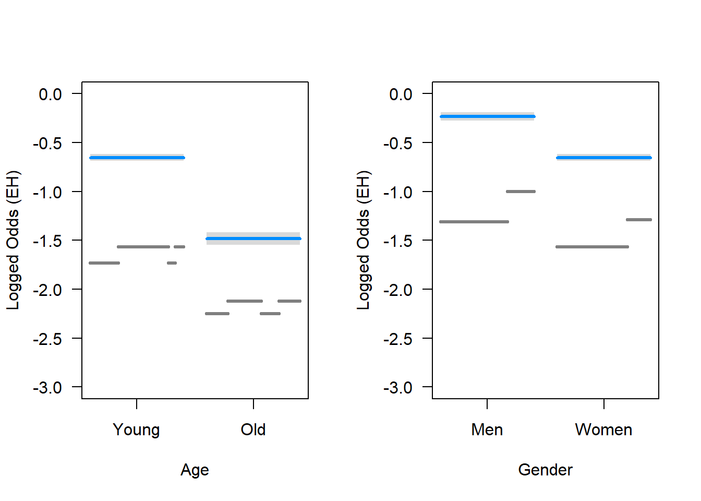
par(mfrow = c(1, 1))A more intuitive way to visualze results id to plot the predicted values against the observed values.
# extract predicted probabilities
blrdata$Predicted <- predict(lr.glm, blrdata, type = "response")
# plot
ggplot(blrdata, aes(Age, Predicted, color = Gender)) +
stat_summary(fun.y = mean, geom = "point") +
stat_summary(fun.data = mean_cl_boot, geom = "errorbar", width = 0.2) +
theme_set(theme_bw(base_size = 10)) +
theme(legend.position = "top") +
ylim(0, .75) +
labs(x = "", y = "Predicted Probabilty of eh") +
scale_color_manual(values = c("gray20", "gray70"))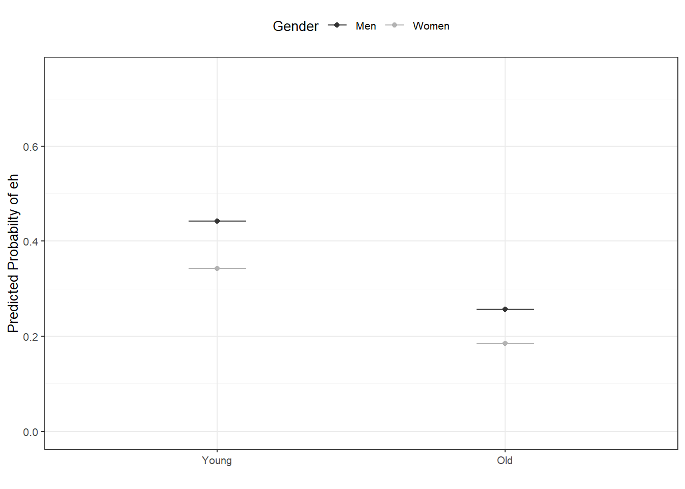
4.7 Model Diagnostics
We are now in a position to perform model diagnostics and test if the model violates distributional requirements. In a first step, we test for the existence of multicollinearity.
4.7.1 Multicollinearity
To check whether the final minimal model contains predictors that correlate with each other, we extract variance inflation factors (VIF). If a model contains predictors that have variance inflation factors (VIF) > 10 the model is completely unreliable and cannot claim the multicollinearity is absent (Myers 1990). Predictors causing such VIFs should be removed. Indeed, predictors with VIF values greater than 4 are usually already problematic but, for large data sets, even VIFs greater than 2 can lead inflated standard errors (Jaeger 2013:http://wiki.bcs.rochester.edu/HlpLab/LSA2013Regression?action=AttachFile&do=view&target=LSA13-Lecture6-CommonIssuesAndSolutions.pdf). Also, VIFs of 2.5 can be problematic (Szmrecsanyi 2006, 215) and (Zuur, Ieno, and Elphick 2010) proposes that variables with VIFs exceeding 3 should be removed.
vif(lr.glm)## AgeOld GenderWomen
## 1.005 1.005In addition, predictors with 1/VIF values \(<\) .1 must be removed (data points with values above .2 are considered problematic) (Menard 1995) and the mean value of VIFs should be \(<\) 1 (Bowerman and O’Connell 1990).
mean(vif(lr.glm))## [1] 1.0054.7.2 Outlier detection
In order to detect potential outliers, we will calculate diagnostic parameters and add these to our data set.
infl <- influence.measures(lr.glm) # calculate influence statistics
blrdata <- data.frame(blrdata, infl[[1]], infl[[2]]) # add influence statisticslibrary(knitr) # load library
kable(head(blrdata), caption = "First six rows of the data set with added influence statistics.")| ID | Gender | Age | Ethnicity | EH | Prediction | Predicted | dfb.1_ | dfb.AgOl | dfb.GndW | dffit | cov.r | cook.d | hat | dfb.1_.1 | dfb.AgOl.1 | dfb.GndW.1 | dffit.1 | cov.r.1 | cook.d.1 | hat.1 |
|---|---|---|---|---|---|---|---|---|---|---|---|---|---|---|---|---|---|---|---|---|
| Men | Young | Pakeha | 0 | 0 | 0.4422 | -0.0107 | 0.0038 | 0.0079 | -0.0107 | 1 | 0.0000 | 0.0001 | FALSE | FALSE | FALSE | FALSE | FALSE | FALSE | FALSE | |
| Men | Young | Pakeha | 1 | 0 | 0.4422 | 0.0127 | -0.0044 | -0.0094 | 0.0127 | 1 | 0.0001 | 0.0001 | FALSE | FALSE | FALSE | FALSE | FALSE | FALSE | FALSE | |
| Men | Young | Pakeha | 0 | 0 | 0.4422 | -0.0107 | 0.0038 | 0.0079 | -0.0107 | 1 | 0.0000 | 0.0001 | FALSE | FALSE | FALSE | FALSE | FALSE | FALSE | FALSE | |
| Men | Young | Pakeha | 0 | 0 | 0.4422 | -0.0107 | 0.0038 | 0.0079 | -0.0107 | 1 | 0.0000 | 0.0001 | FALSE | FALSE | FALSE | FALSE | FALSE | FALSE | FALSE | |
| Men | Young | Pakeha | 1 | 0 | 0.4422 | 0.0127 | -0.0044 | -0.0094 | 0.0127 | 1 | 0.0001 | 0.0001 | FALSE | FALSE | FALSE | FALSE | FALSE | FALSE | FALSE | |
| Men | Young | Pakeha | 1 | 0 | 0.4422 | 0.0127 | -0.0044 | -0.0094 | 0.0127 | 1 | 0.0001 | 0.0001 | FALSE | FALSE | FALSE | FALSE | FALSE | FALSE | FALSE |
4.7.3 Sample Size
We now check whether the sample size is sufficient for our analysis (Green 1991). * if you are interested in the overall model: 50 + 8k (k = number of predictors) * if you are interested in individual predictors: 104 + k * if you are interested in both: take the higher value!
# function to evaluate sample size
smplesz <- function(x) {
ifelse((length(x$fitted) < (104 + ncol(summary(x)$coefficients)-1)) == TRUE,
return(
paste("Sample too small: please increase your sample by ",
104 + ncol(summary(x)$coefficients)-1 - length(x$fitted),
" data points", collapse = "")),
return("Sample size sufficient")) }
# apply unction to model
smplesz(lr.glm)## [1] "Sample size sufficient"According to rule of thumb provided in Green (1991), the sample size is sufficient for our analysis.
4.8 Summarizing Results
blrmsummary <- blrm.summary(lr.glm, lr.lrm, predict.acc) # summarize regression analysis
blrmsummary[, -c(4:5)] # remove columns with confidence intervals## Estimate VIF OddsRatio Std. Error
## (Intercept) -0.23 0.79 0.02
## AgeOld -0.83 1 0.44 0.03
## GenderWomen -0.42 1 0.66 0.03
## Model statistics
## Number of cases in model
## Observed misses
## Observed successes
## Null deviance
## Residual deviance
## R2 (Nagelkerke)
## R2 (Hosmer & Lemeshow)
## R2 (Cox & Snell)
## C
## Somers' Dxy
## AIC
## Prediction accuracy
## Model Likelihood Ratio Test Model L.R.: 868.21
## z value Pr(>|z|) Significance
## (Intercept) -10.44 0 p < .001***
## AgeOld -24.78 0 p < .001***
## GenderWomen -15.42 0 p < .001***
## Model statistics Value
## Number of cases in model 25821
## Observed misses 0 : 17114
## Observed successes 1 : 8707
## Null deviance 33007.75
## Residual deviance 32139.54
## R2 (Nagelkerke) 0.046
## R2 (Hosmer & Lemeshow) 0.026
## R2 (Cox & Snell) 0.033
## C 0.602
## Somers' Dxy 0.203
## AIC 32145.54
## Prediction accuracy 99.6%
## Model Likelihood Ratio Test df: 2 p-value: 0 sig: p < .001***R2 (Hosmer & Lemeshow)
“Rt is the proportional reduction in the absolute value of the log-likelihood measure and as such it is a measure of how much the badness of fit improves as a result of the inclusion of the predictor variables. It can vary between 0 (indicating that the predictors are useless at predicting the outcome variable) and 1 (indicating that the model predicts the outcome variable perfectly)” (A. Field, Miles, and Field (2012) 317).
R2 (Cox & Snell)
“Cox and Snell’s R~s (1989) is based on the deviance of the model (-2LL(new») and the deviance of the baseline model (-2LL(baseline), and the sample size, n […]. However, this statistic never reaches its theoretical maximum of 1.
R2 (Nagelkerke)
Since R2 (Cox & Snell) never reaches its theoretical maximum of 1, Nagelkerke (1991) suggested Nagelkerke’s R^2. (Field, Miles & Field 2012:317-318).
Somers’ Dxy
Somers’ Dxy is a rank correlation between predicted probabilities and observed responses ranges between 0 (randomness) and 1 (perfect prediction). Somers Dxy should have a value higher than .5 for the model to be meaningful (cf. Baayen (2008) 204).
C C is an index of concordance between the predicted probability and the observed response. When C takes the value 0.5, the predictions are random, when it is 1, prediction is perfect. A value above 0.8 indicates that the model may have some real predictive capacity (cf. Baayen (2008) 204).
Akaike information criteria (AIC)
Akaike information criteria (AlC = -2LL + 2k) provide a value that reflects a ratio between the number of predictors in the model and the variance that is explained by these predictors. Changes in AIC can serve as a measure of whether the inclusion of a variable leads to a significant increase in the amount of variance that is explained by the model. “You can think of this as the price you pay for something: you get a better value of R2, but you pay a higher price, and was that higher price worth it? These information criteria help you to decide. The BIC is the same as the AIC but adjusts the penalty included in the AlC (i.e., 2k) by the number of cases: BlC = -2LL + 2k x log(n) in which n is the number of cases in the model” (A. Field, Miles, and Field (2012) 318).
5 Ordinal Regression
Ordinal regression is very similar to multiple linear regression but takes an ordinal dependent variable. For this reason, ordinal regression is one of the key methods in analyzing Likert data.
# load libraries
library(foreign)
library(ggplot2)
library(MASS)
library(Hmisc)
library(reshape2)
# load data
ordata <- read.delim("https://slcladal.github.io/data/ordinaldata.txt", sep = "\t", header = T)
colnames(ordata) <- c("Recommend", "Internal", "Exchange", "FinalScore")
# inspect data
head(ordata); nrow(ordata)## Recommend Internal Exchange FinalScore
## 1 very likely 0 0 3.26
## 2 somewhat likely 1 0 3.21
## 3 unlikely 1 1 3.94
## 4 somewhat likely 0 0 2.81
## 5 somewhat likely 0 0 2.53
## 6 unlikely 0 1 2.59## [1] 400#
ordata$Recommend <- factor(ordata$Recommend,
levels=c("unlikely",
"somewhat likely",
"very likely"),
labels=c("unlikely",
"somewhat likely",
"very likely"))
# one at a time, table apply, pared, and public
lapply(ordata[, c("Recommend", "Internal", "Exchange")], table)## $Recommend
##
## unlikely somewhat likely very likely
## 220 140 40
##
## $Internal
##
## 0 1
## 337 63
##
## $Exchange
##
## 0 1
## 343 57## three way cross tabs (xtabs) and flatten the table
ftable(xtabs(~ Exchange + Recommend + Internal, data = ordata))## Internal 0 1
## Exchange Recommend
## 0 unlikely 175 14
## somewhat likely 98 26
## very likely 20 10
## 1 unlikely 25 6
## somewhat likely 12 4
## very likely 7 3summary(ordata$FinalScore); sd(ordata$FinalScore)## Min. 1st Qu. Median Mean 3rd Qu. Max.
## 1.90 2.72 2.99 3.00 3.27 4.00## [1] 0.3979# visualize data
ggplot(ordata, aes(x = Recommend, y = FinalScore)) +
geom_boxplot(size = .75) +
geom_jitter(alpha = .5) +
facet_grid(Exchange ~ Internal, margins = TRUE) +
theme(axis.text.x = element_text(angle = 45, hjust = 1, vjust = 1))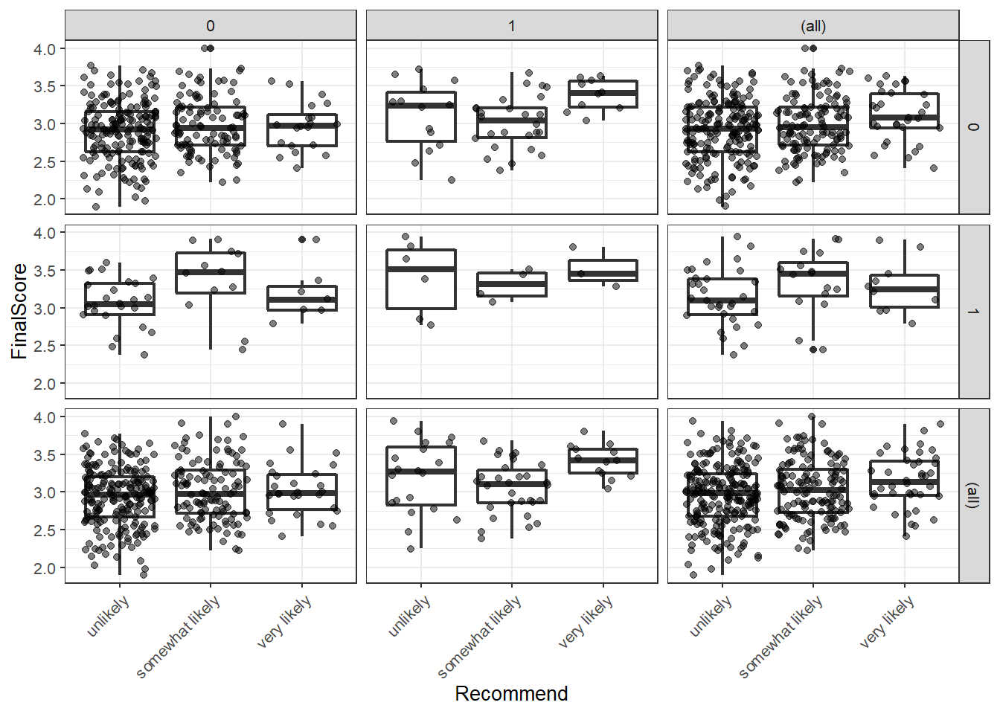
## fit ordered logit model and store results 'm'
m <- polr(Recommend ~ Internal + Exchange + FinalScore, data = ordata, Hess=TRUE)
## view a summary of the model
summary(m)## Call:
## polr(formula = Recommend ~ Internal + Exchange + FinalScore,
## data = ordata, Hess = TRUE)
##
## Coefficients:
## Value Std. Error t value
## Internal 1.0477 0.266 3.942
## Exchange -0.0588 0.298 -0.197
## FinalScore 0.6159 0.261 2.363
##
## Intercepts:
## Value Std. Error t value
## unlikely|somewhat likely 2.204 0.780 2.827
## somewhat likely|very likely 4.299 0.804 5.345
##
## Residual Deviance: 717.02
## AIC: 727.02## store table
(ctable <- coef(summary(m)))## Value Std. Error t value
## Internal 1.04769 0.2658 3.9418
## Exchange -0.05879 0.2979 -0.1974
## FinalScore 0.61594 0.2606 2.3632
## unlikely|somewhat likely 2.20391 0.7795 2.8272
## somewhat likely|very likely 4.29936 0.8043 5.3453## calculate and store p values
p <- pnorm(abs(ctable[, "t value"]), lower.tail = FALSE) * 2
## combined table
(ctable <- cbind(ctable, "p value" = p))## Value Std. Error t value p value
## Internal 1.04769 0.2658 3.9418 0.00008087072
## Exchange -0.05879 0.2979 -0.1974 0.84354636407
## FinalScore 0.61594 0.2606 2.3632 0.01811593663
## unlikely|somewhat likely 2.20391 0.7795 2.8272 0.00469600407
## somewhat likely|very likely 4.29936 0.8043 5.3453 0.00000009027# default method gives profiled CIs
(ci <- confint(m)) ## 2.5 % 97.5 %
## Internal 0.5282 1.5722
## Exchange -0.6522 0.5191
## FinalScore 0.1076 1.1309# CIs assuming normality
confint.default(m) ## 2.5 % 97.5 %
## Internal 0.5268 1.569
## Exchange -0.6426 0.525
## FinalScore 0.1051 1.127## odds ratios
exp(coef(m))## Internal Exchange FinalScore
## 2.8511 0.9429 1.8514## OR and CI
exp(cbind(OR = coef(m), ci))## OR 2.5 % 97.5 %
## Internal 2.8511 1.6958 4.817
## Exchange 0.9429 0.5209 1.681
## FinalScore 1.8514 1.1136 3.098References
Agresti, A. (1996) An Introduction to Categorical Data Analysis. New York: John Wiley & Sons, Inc
Agresti, A. (2002) Categorical Data Analysis, Second Edition. Hoboken, New Jersey: John Wiley & Sons, Inc.
Harrell, F. E, (2001) Regression Modeling Strategies. New York: Springer-Verlag.
Liao, T. F. (1994) Interpreting Probability Models: Logit, Probit, and Other Generalized Linear Models. Thousand Oaks, CA: Sage Publications, Inc.
Powers, D. and Xie, Yu. Statistical Methods for Categorical Data Analysis. Bingley, UK: Emerald Group Publishing Limited.6 Poisson Regression
Poisson regressions are used to analyze data where the dependent variable represents counts. However, the tricky thing about Poisson regressions is that the data has to conform to the Poisson distribution which is, accroding to my experience, rarely the case, unfortunately.
# load libraries
library(ggplot2)
library(sandwich)
library(msm)
# load data
poissondata <- read.delim("data/poissondata.txt", sep = "\t", header = T, skipNul = T, quote = "")
# inspect data
summary(poissondata)## Id Awards Progression MathScore
## Min. : 1.0 Min. :0.00 Academic :105 Min. :33.0
## 1st Qu.: 50.8 1st Qu.:0.00 General : 45 1st Qu.:45.0
## Median :100.5 Median :0.00 Vocational: 50 Median :52.0
## Mean :100.5 Mean :0.63 Mean :52.6
## 3rd Qu.:150.2 3rd Qu.:1.00 3rd Qu.:59.0
## Max. :200.0 Max. :6.00 Max. :75.0We will clean the data by factorizing Id which is currentlx considered a numeric variable rather than a factor.
# process data
poissondata <- poissondata %>%
mutate(Id = factor(Id, levels = 1:200, labels = 1:200))
# inspect data
summary(poissondata); str(poissondata)## Id Awards Progression MathScore
## 1 : 1 Min. :0.00 Academic :105 Min. :33.0
## 2 : 1 1st Qu.:0.00 General : 45 1st Qu.:45.0
## 3 : 1 Median :0.00 Vocational: 50 Median :52.0
## 4 : 1 Mean :0.63 Mean :52.6
## 5 : 1 3rd Qu.:1.00 3rd Qu.:59.0
## 6 : 1 Max. :6.00 Max. :75.0
## (Other):194## 'data.frame': 200 obs. of 4 variables:
## $ Id : Factor w/ 200 levels "1","2","3","4",..: 45 108 15 67 153 51 164 133 2 53 ...
## $ Awards : int 0 0 0 0 0 0 0 0 0 0 ...
## $ Progression: Factor w/ 3 levels "Academic","General",..: 3 2 3 3 3 2 3 3 3 3 ...
## $ MathScore : int 41 41 44 42 40 42 46 40 33 46 ...First, we check if the conditions for a Poisson regression are met.
# output the results
gf = goodfit(poissondata$Awards,type= "poisson",method= "ML")
summary(gf)##
## Goodness-of-fit test for poisson distribution
##
## X^2 df P(> X^2)
## Likelihood Ratio 33.01 5 0.000003742If the p-values is smaller than .05, then data is not Poisson distributed which means that it differs significantly from a Poisson distribution and is very likely overdispersed. We will check the divergence froma Poisson distribution visually by plotting the observed counts against the expected counts if the data were Poisson distributed.
plot(gf,main="Count data vs Poisson distribution")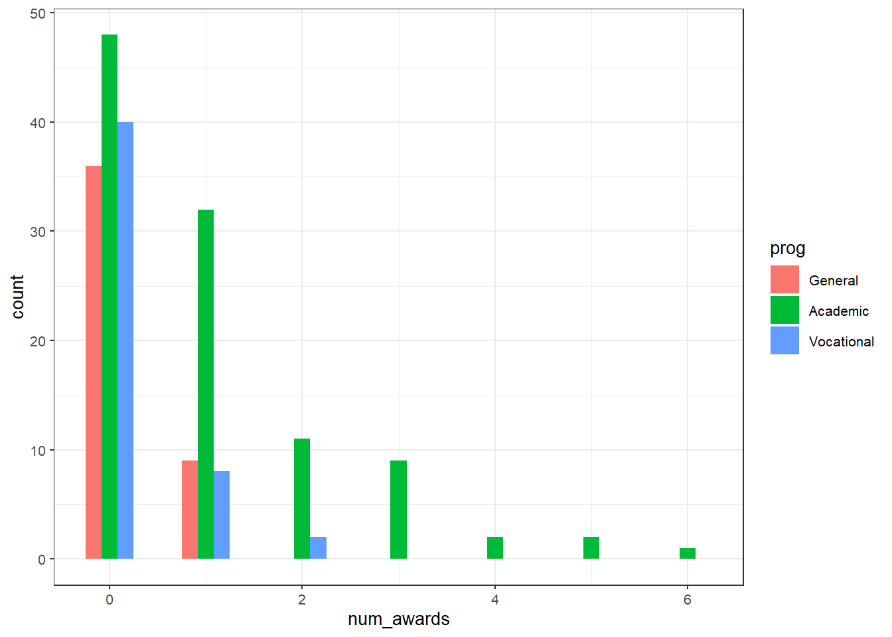
Although the goodfit function reported that the data differs significantly from the Poisson distribution, the fit is rather good. We can use an additional Levene’s test to check if variance homogeity is given.
# check homogeneity
leveneTest(poissondata$Awards, poissondata$Progression, center = mean)## Levene's Test for Homogeneity of Variance (center = mean)
## Df F value Pr(>F)
## group 2 17.1 0.00000014 ***
## 197
## ---
## Signif. codes: 0 '***' 0.001 '**' 0.01 '*' 0.05 '.' 0.1 ' ' 1The Levene’s test indicates that variance homogeneity is also violated. Since both the approximation to a Poisson distributuion and variance homogeineity are violated, we should switch either to a quasi-Poisson model or a negative binomial model. However, as we are only intersted in how to implement a Poisson model here, we continue despite the fact that this could not be recommended if we were actually interested in accurate results based on a reliable model.
In a next step, we summarize Progression by inspecting the means and standard deviations of the individual variable levels.
# extract mean and standard devaiation
with(poissondata, tapply(Awards, Progression, function(x) {
sprintf("M (SD) = %1.2f (%1.2f)", mean(x), sd(x))
}))## Academic General Vocational
## "M (SD) = 1.00 (1.28)" "M (SD) = 0.20 (0.40)" "M (SD) = 0.24 (0.52)"Now, we visualize the data.
# plot data
ggplot(poissondata, aes(Awards, fill = Progression)) +
geom_histogram(binwidth=.5, position="dodge")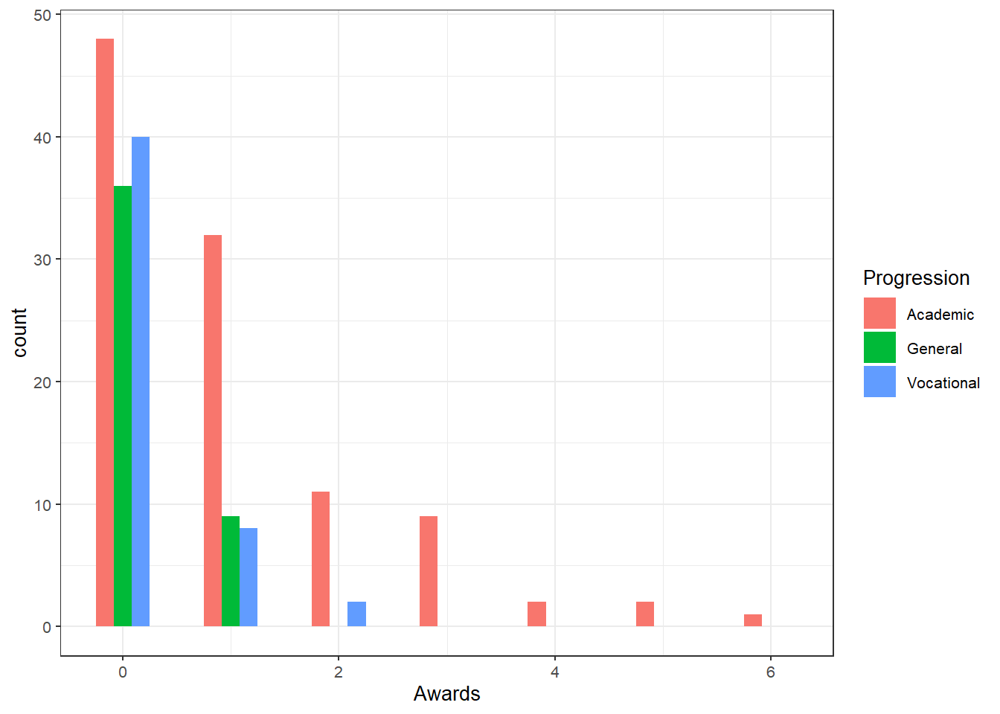
# calculate poissant regression
m1.poisson <- glm(Awards ~ Progression + MathScore, family="poisson", data=poissondata)
# inspect model
summary(m1.poisson)##
## Call:
## glm(formula = Awards ~ Progression + MathScore, family = "poisson",
## data = poissondata)
##
## Deviance Residuals:
## Min 1Q Median 3Q Max
## -2.204 -0.844 -0.511 0.256 2.680
##
## Coefficients:
## Estimate Std. Error z value Pr(>|z|)
## (Intercept) -4.1633 0.6629 -6.28 0.000000000337 ***
## ProgressionGeneral -1.0839 0.3583 -3.03 0.0025 **
## ProgressionVocational -0.7140 0.3200 -2.23 0.0257 *
## MathScore 0.0702 0.0106 6.62 0.000000000036 ***
## ---
## Signif. codes: 0 '***' 0.001 '**' 0.01 '*' 0.05 '.' 0.1 ' ' 1
##
## (Dispersion parameter for poisson family taken to be 1)
##
## Null deviance: 287.67 on 199 degrees of freedom
## Residual deviance: 189.45 on 196 degrees of freedom
## AIC: 373.5
##
## Number of Fisher Scoring iterations: 6In addition to the Estimates for the coefficients, we could also calculate the confidence intervals for the coefficients (LL stands for lwoer limit and UL for upper limit in the table below).
cov.m1 <- vcovHC(m1.poisson, type="HC0")
std.err <- sqrt(diag(cov.m1))
r.est <- cbind(Estimate= coef(m1.poisson), "Robust SE" = std.err,
"Pr(>|z|)" = 2 * pnorm(abs(coef(m1.poisson)/std.err), lower.tail=FALSE),
LL = coef(m1.poisson) - 1.96 * std.err,
UL = coef(m1.poisson) + 1.96 * std.err)
# inspect data
r.est## Estimate Robust SE Pr(>|z|) LL UL
## (Intercept) -4.16327 0.64809 0.00000000013286 -5.4335 -2.89300
## ProgressionGeneral -1.08386 0.32105 0.00073547448242 -1.7131 -0.45460
## ProgressionVocational -0.71405 0.29864 0.01680312040112 -1.2994 -0.12871
## MathScore 0.07015 0.01044 0.00000000001784 0.0497 0.09061with(m1.poisson, cbind(res.deviance = deviance, df = df.residual,
p = pchisq(deviance, df.residual, lower.tail=FALSE)))## res.deviance df p
## [1,] 189.4 196 0.6182## update m1 model dropping prog
m2.poisson <- update(m1.poisson, . ~ . - Progression)
## test model differences with chi square test
anova(m2.poisson, m1.poisson, test="Chisq")## Analysis of Deviance Table
##
## Model 1: Awards ~ MathScore
## Model 2: Awards ~ Progression + MathScore
## Resid. Df Resid. Dev Df Deviance Pr(>Chi)
## 1 198 204
## 2 196 189 2 14.6 0.00069 ***
## ---
## Signif. codes: 0 '***' 0.001 '**' 0.01 '*' 0.05 '.' 0.1 ' ' 1s <- deltamethod(list(~ exp(x1), ~ exp(x2), ~ exp(x3), ~ exp(x4)),
coef(m1.poisson), cov.m1)
## exponentiate old estimates dropping the p values
rexp.est <- exp(r.est[, -3])
## replace SEs with estimates for exponentiated coefficients
rexp.est[, "Robust SE"] <- s
rexp.est## Estimate Robust SE LL UL
## (Intercept) 0.01556 0.01008 0.004368 0.05541
## ProgressionGeneral 0.33829 0.10861 0.180304 0.63470
## ProgressionVocational 0.48966 0.14623 0.272698 0.87923
## MathScore 1.07267 0.01119 1.050955 1.09484# extract predicted values
(s1 <- data.frame(MathScore = mean(poissondata$MathScore),
Progression = factor(1:3, levels = 1:3, labels = names(table(poissondata$Progression)))))## MathScore Progression
## 1 52.65 Academic
## 2 52.65 General
## 3 52.65 Vocationalpredict(m1.poisson, s1, type="response", se.fit=TRUE)## $fit
## 1 2 3
## 0.6249 0.2114 0.3060
##
## $se.fit
## 1 2 3
## 0.08628 0.07050 0.08834
##
## $residual.scale
## [1] 1## calculate and store predicted values
poissondata$Predicted <- predict(m1.poisson, type="response")
## order by program and then by math
poissondata <- poissondata[with(poissondata, order(Progression, MathScore)), ]## create the plot
ggplot(poissondata, aes(x = MathScore, y = Predicted, colour = Progression)) +
geom_point(aes(y = Awards), alpha=.5,
position=position_jitter(h=.2)) +
geom_line(size = 1) +
labs(x = "Math Score", y = "Expected number of awards")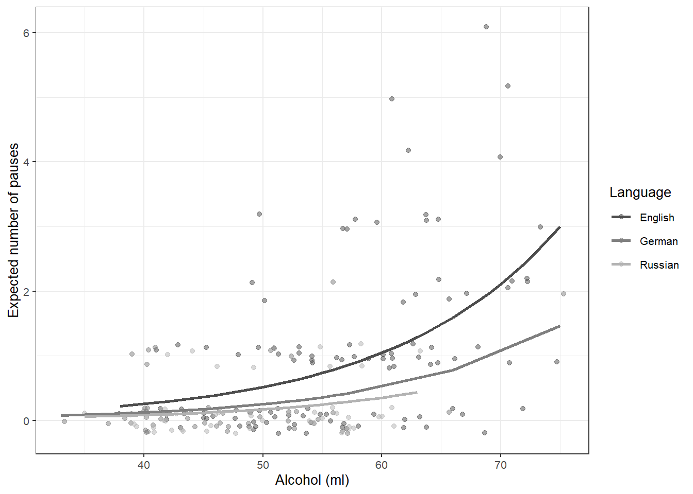
7 Robust Regression
# load libraries
library(foreign)
library(MASS)
library(sfsmisc)
# load data
robustdata <- read.delim("https://slcladal.github.io/data/robustdata.txt", sep = "\t", header = T)
# inspect data
summary(robustdata)## sid state crime murder
## Min. : 1.0 ak : 1 Min. : 82 Min. : 1.60
## 1st Qu.:13.5 al : 1 1st Qu.: 326 1st Qu.: 3.90
## Median :26.0 ar : 1 Median : 515 Median : 6.80
## Mean :26.0 az : 1 Mean : 613 Mean : 8.73
## 3rd Qu.:38.5 ca : 1 3rd Qu.: 773 3rd Qu.:10.35
## Max. :51.0 co : 1 Max. :2922 Max. :78.50
## (Other):45
## pctmetro pctwhite pcths poverty
## Min. : 24.0 Min. :31.8 Min. :64.3 Min. : 8.0
## 1st Qu.: 49.5 1st Qu.:79.3 1st Qu.:73.5 1st Qu.:10.7
## Median : 69.8 Median :87.6 Median :76.7 Median :13.1
## Mean : 67.4 Mean :84.1 Mean :76.2 Mean :14.3
## 3rd Qu.: 84.0 3rd Qu.:92.6 3rd Qu.:80.1 3rd Qu.:17.4
## Max. :100.0 Max. :98.5 Max. :86.6 Max. :26.4
##
## single
## Min. : 8.4
## 1st Qu.:10.1
## Median :10.9
## Mean :11.3
## 3rd Qu.:12.1
## Max. :22.1
## # create model
slm <- lm(crime ~ poverty + single, data = robustdata)
# inspect model
summary(slm)##
## Call:
## lm(formula = crime ~ poverty + single, data = robustdata)
##
## Residuals:
## Min 1Q Median 3Q Max
## -811.1 -114.3 -22.4 121.9 689.8
##
## Coefficients:
## Estimate Std. Error t value Pr(>|t|)
## (Intercept) -1368.19 187.21 -7.31 0.000000002479 ***
## poverty 6.79 8.99 0.76 0.45
## single 166.37 19.42 8.57 0.000000000031 ***
## ---
## Signif. codes: 0 '***' 0.001 '**' 0.01 '*' 0.05 '.' 0.1 ' ' 1
##
## Residual standard error: 244 on 48 degrees of freedom
## Multiple R-squared: 0.707, Adjusted R-squared: 0.695
## F-statistic: 58 on 2 and 48 DF, p-value: 0.000000000000158We now check whether the model is well fitted using diagnostic plots.
# create model diagnost plots
opar <- par(mfrow = c(2,2), oma = c(0, 0, 1.1, 0))
plot(slm, las = 1)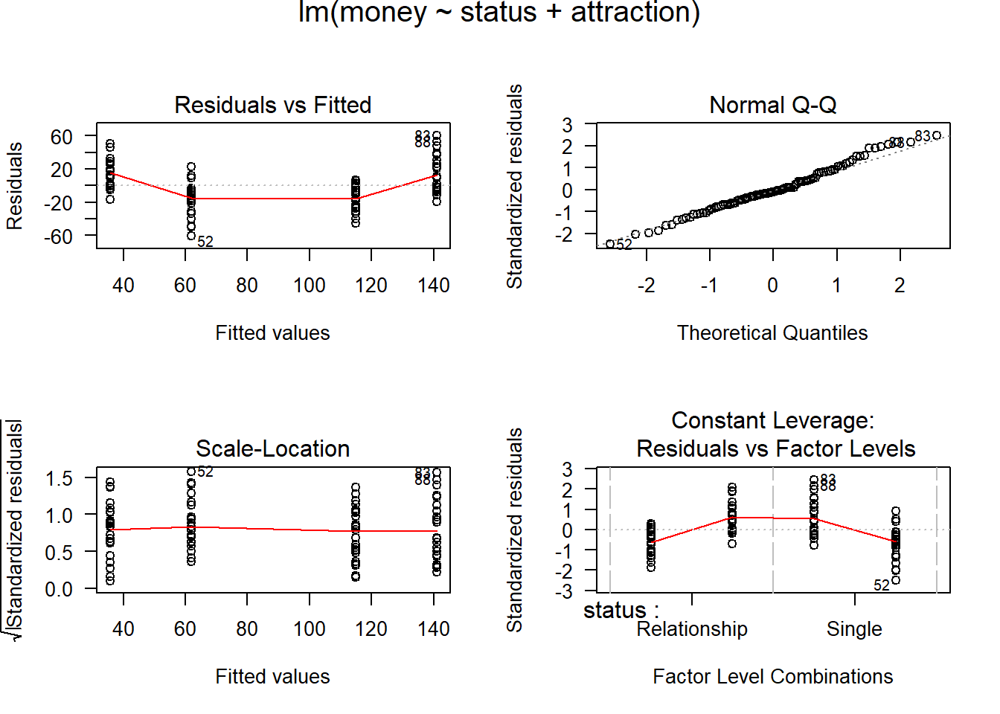
par(opar)The diagnostic plots indicate that there is an outlier in the data (data point 51). Therefore, we need to evaluate if the outlier severely affects the fit of the model.
robustdata[c(9, 25, 51), 1:2]## sid state
## 9 9 fl
## 25 25 ms
## 51 51 dcd1 <- cooks.distance(slm)
r <- stdres(slm)
a <- cbind(robustdata, d1, r)
a[d1 > 4/51, ]## sid state crime murder pctmetro pctwhite pcths poverty single d1
## 1 1 ak 761 9.0 41.8 75.2 86.6 9.1 14.3 0.1255
## 9 9 fl 1206 8.9 93.0 83.5 74.4 17.8 10.6 0.1426
## 25 25 ms 434 13.5 30.7 63.3 64.3 24.7 14.7 0.6139
## 51 51 dc 2922 78.5 100.0 31.8 73.1 26.4 22.1 2.6363
## r
## 1 -1.397
## 9 2.903
## 25 -3.563
## 51 2.616rabs <- abs(r)
a <- cbind(robustdata, d1, r, rabs)
asorted <- a[order(-rabs), ]
asorted[1:10, ]## sid state crime murder pctmetro pctwhite pcths poverty single d1
## 25 25 ms 434 13.5 30.7 63.3 64.3 24.7 14.7 0.61387
## 9 9 fl 1206 8.9 93.0 83.5 74.4 17.8 10.6 0.14259
## 51 51 dc 2922 78.5 100.0 31.8 73.1 26.4 22.1 2.63625
## 46 46 vt 114 3.6 27.0 98.4 80.8 10.0 11.0 0.04272
## 26 26 mt 178 3.0 24.0 92.6 81.0 14.9 10.8 0.01676
## 21 21 me 126 1.6 35.7 98.5 78.8 10.7 10.6 0.02233
## 1 1 ak 761 9.0 41.8 75.2 86.6 9.1 14.3 0.12548
## 31 31 nj 627 5.3 100.0 80.8 76.7 10.9 9.6 0.02229
## 14 14 il 960 11.4 84.0 81.0 76.2 13.6 11.5 0.01266
## 20 20 md 998 12.7 92.8 68.9 78.4 9.7 12.0 0.03570
## r rabs
## 25 -3.563 3.563
## 9 2.903 2.903
## 51 2.616 2.616
## 46 -1.742 1.742
## 26 -1.461 1.461
## 21 -1.427 1.427
## 1 -1.397 1.397
## 31 1.354 1.354
## 14 1.338 1.338
## 20 1.287 1.287# create robust regression model
rmodel <- rlm(crime ~ poverty + single, data = robustdata)
# inspect model
summary(rmodel)##
## Call: rlm(formula = crime ~ poverty + single, data = robustdata)
## Residuals:
## Min 1Q Median 3Q Max
## -846.1 -125.8 -16.5 119.2 679.9
##
## Coefficients:
## Value Std. Error t value
## (Intercept) -1423.037 167.590 -8.491
## poverty 8.868 8.047 1.102
## single 168.986 17.388 9.719
##
## Residual standard error: 182 on 48 degrees of freedomhweights <- data.frame(state = robustdata$state, resid = rmodel$resid, weight = rmodel$w)
hweights2 <- hweights[order(rmodel$w), ]
hweights2[1:15, ]## state resid weight
## 25 ms -846.09 0.2890
## 9 fl 679.94 0.3595
## 46 vt -410.48 0.5956
## 51 dc 376.34 0.6494
## 26 mt -356.14 0.6865
## 21 me -337.10 0.7252
## 31 nj 331.12 0.7384
## 14 il 319.10 0.7661
## 1 ak -313.16 0.7807
## 20 md 307.19 0.7958
## 19 ma 291.21 0.8395
## 18 la -266.96 0.9159
## 2 al 105.40 1.0000
## 3 ar 30.54 1.0000
## 4 az -43.25 1.0000rr.bisquare <- rlm(crime ~ poverty + single, data=robustdata, psi = psi.bisquare)
summary(rr.bisquare)##
## Call: rlm(formula = crime ~ poverty + single, data = robustdata, psi = psi.bisquare)
## Residuals:
## Min 1Q Median 3Q Max
## -906 -141 -15 115 668
##
## Coefficients:
## Value Std. Error t value
## (Intercept) -1535.334 164.506 -9.333
## poverty 11.690 7.899 1.480
## single 175.930 17.068 10.308
##
## Residual standard error: 202 on 48 degrees of freedombiweights <- data.frame(state = robustdata$state,
resid = rr.bisquare$resid,
weight = rr.bisquare$w)
biweights2 <- biweights[order(rr.bisquare$w), ]
biweights2[1:15, ]## state resid weight
## 25 ms -905.6 0.007653
## 9 fl 668.4 0.252871
## 46 vt -402.8 0.671495
## 26 mt -360.9 0.731137
## 31 nj 346.0 0.751348
## 18 la -332.7 0.768938
## 21 me -328.6 0.774103
## 1 ak -325.9 0.777662
## 14 il 313.1 0.793659
## 20 md 308.8 0.799066
## 19 ma 297.6 0.812597
## 51 dc 260.6 0.854442
## 50 wy -234.2 0.881661
## 5 ca 201.4 0.911714
## 10 ga -186.6 0.924033After inspecting the weights, we also want to extract the p-values for the predictors. The p-values have to be calculated separately using the “f.robftest” fucntion from the “sfsmisc” library.
p_poverty <- f.robftest(rmodel, var = "poverty")
p_single <- f.robftest(rmodel, var = "single")
# inspect results
p_poverty; p_single##
## robust F-test (as if non-random weights)
##
## data: from rlm(formula = crime ~ poverty + single, data = robustdata)
## F = 1.2, p-value = 0.3
## alternative hypothesis: true poverty is not equal to 0##
## robust F-test (as if non-random weights)
##
## data: from rlm(formula = crime ~ poverty + single, data = robustdata)
## F = 83, p-value = 0.000000000005
## alternative hypothesis: true single is not equal to 0The output shows that poverty is not a significant predictor while single correlates highly significanty with crime.
References
Achen, Christopher H. 1982. Interpreting and Using Regression. Vol. 29. Sage.
Baayen, R Harald. 2008. Analyzing Linguistic Data. a Practical Introduction to Statistics Using R. Cambridge: Cambridge University press.
Bortz, Jürgen. 2006. Statistik: Für Human-Und Sozialwissenschaftler. Springer-Verlag.
Bowerman, Bruce L, and Richard T O’Connell. 1990. Linear Statistical Models: An Applied Approach. Boston: PWS-Kent.
Crawley, Michael J. 2005. Statistics: An Introduction Using R. 2005. Chichester, West Sussex: John Wiley & Sons.
———. 2012. The R Book. John Wiley & Sons.
Faraway, Julian J. 2002. Practical Regression and Anova Using R. University of Bath.
Field, Andy, Jeremy Miles, and Zoe Field. 2012. Discovering Statistics Using R. Sage.
Green, Samuel B. 1991. “How Many Subjects Does It Take to Do a Regression Analysis.” Multivariate Behavioral Research 26 (3). Taylor & Francis: 499–510.
Gries, Stefan Th. 2009. Statistics for Linguistics Using R: A Practical Introduction. Berlin & New York: Mouton de Gruyter.
Menard, Scott. 1995. Applied Logistic Regression Analysis: Sage University Series on Quantitative Applications in the Social Sciences. Thousand Oaks, CA: Sage.
Myers, Raymond H. 1990. Classical and Modern Regression with Applications. Vol. 2. Duxbury Press Belmont, CA.
Szmrecsanyi, Benedikt. 2006. Morphosyntactic Persistence in Spoken English: A Corpus Study at the Intersection of Variationist Sociolinguistics, Psycholinguistics, and Discourse Analysis. Berlin & New York: Walter de Gruyter.
Wilcox, Rand R. 2009. Basic Statistics: Understanding Conventional Methods and Modern Insights. Oxford University Press.
Zuur, Alain F., Elena N. Ieno, and Chris S. Elphick. 2010. “A Protocol for Data Exploration to Avoid Common Statistical Problems.” Methods in Ecology and Evolution 1 (1): 3–14.